<!doctype html>
<html lang="en">
<head>
  <meta charset="utf-8">
  <meta name="viewport" content="width=device-width, initial-scale=1">
  <title>arxiv digest — 2026-09-02</title>
  <style>
:root {
  --bg: #ffffff;
  --fg: #1f2328;
  --muted: #59636e;
  --border: #d0d7de;
  --card: #f6f8fa;
  --link: #0969da;
}
body {
  max-width: 980px;
  margin: 0 auto;
  padding: 2rem 1rem 5rem;
  font-family: -apple-system, BlinkMacSystemFont, "Segoe UI", Helvetica, Arial, sans-serif;
  line-height: 1.55;
  color: var(--fg);
  background: var(--bg);
}
a { color: var(--link); }
img { max-width: 100%; height: auto; }
pre, code { background: var(--card); border-radius: 6px; }
pre { padding: 1rem; overflow-x: auto; }
blockquote { border-left: 4px solid var(--border); padding-left: 1rem; color: var(--muted); }
details { margin: 0.6rem 0; }
summary { cursor: pointer; font-weight: 600; }
.paper-figures-scroll {
  display: flex;
  gap: 1rem;
  overflow-x: auto;
  overscroll-behavior-x: contain;
  padding: 0.75rem 0.25rem 1rem;
  margin: 1rem 0 1.25rem;
  border-top: 1px solid var(--border);
  border-bottom: 1px solid var(--border);
  scroll-snap-type: x proximity;
}
.paper-figure-card {
  flex: 0 0 min(260px, 72vw);
  scroll-snap-align: start;
  background: var(--card);
  border: 1px solid var(--border);
  border-radius: 12px;
  padding: 0.55rem;
}
.paper-figure-card img {
  display: block;
  width: 100%;
  max-height: 240px;
  object-fit: contain;
  background: white;
  border-radius: 8px;
}
.paper-figure-caption {
  display: block;
  margin-top: 0.5rem;
  color: var(--muted);
  font-size: 0.85rem;
}
.figure-strip-hint {
  color: var(--muted);
  font-size: 0.9rem;
  margin-bottom: -0.3rem;
}
</style>
  <!-- MathJax: renders $...$ inline math and $$...$$ display math, plus
       \(...\) and \[...\]. Loaded from the official CDN; works offline
       once cached. Configured to skip code/pre blocks so arxiv IDs that
       look like dollar amounts don't get mangled. -->
  <script>
    window.MathJax = {
      tex: {
        inlineMath: [['$', '$'], ['\\(', '\\)']],
        displayMath: [['$$', '$$'], ['\\[', '\\]']],
        processEscapes: true,
        processEnvironments: true
      },
      options: {
        skipHtmlTags: ['script', 'noscript', 'style', 'textarea', 'pre', 'code'],
        ignoreHtmlClass: 'tex2jax_ignore',
        processHtmlClass: 'tex2jax_process'
      }
    };
  </script>
  <script id="MathJax-script" async
    src="https://cdn.jsdelivr.net/npm/mathjax@3/es5/tex-chtml.js"></script>
</head>
<body>
<header style="background-color: #333; color: white; padding: 15px; margin-bottom: 20px;">
  <h1 style="margin: 0; font-size: 24px;">
    <a href="https://ochelpan.github.io/arXiv_clean/" style="color: white; text-decoration: none;">Main</a>
  </h1>
</header>

<h1>Daily arXiv Report</h1>

<hr>
<p>
<a href="index.html">← Index</a>
 · <a href="papers_04.html">← Previous</a> · <a href="papers_06.html">Next →</a>
</p>
<hr>

<h2>Papers 81–100</h2>
<p><a id="paper-2608.29742"></a></p>
<h3 id="emergent-pair-density-wave-and-incoherent-metallic-state-in-a-strongly-correlated-doped-system"><a href="http://arxiv.org/abs/2608.29742v1">Emergent Pair Density Wave and Incoherent Metallic State in a Strongly Correlated Doped System</a></h3>
<p><strong>Authors:</strong> Soham Maiti, Nandan Pakhira, A. Taraphder<br>
<strong>Type:</strong> theory · <strong>Category:</strong> strongly correlated electrons · <strong>PDF:</strong> <a href="https://arxiv.org/pdf/2608.29742v1">https://arxiv.org/pdf/2608.29742v1</a><br>
<strong>Analysis basis:</strong> full PDF text, analyzed in chunks
<strong>Topic relevance:</strong> <code>Keldysh / 2PI / non-Gaussian methods</code> <strong>3/5</strong></p>
<div class="figure-strip-hint">↔ Scroll figures horizontally</div>
<div class="paper-figures-scroll">
<figure class="paper-figure-card">
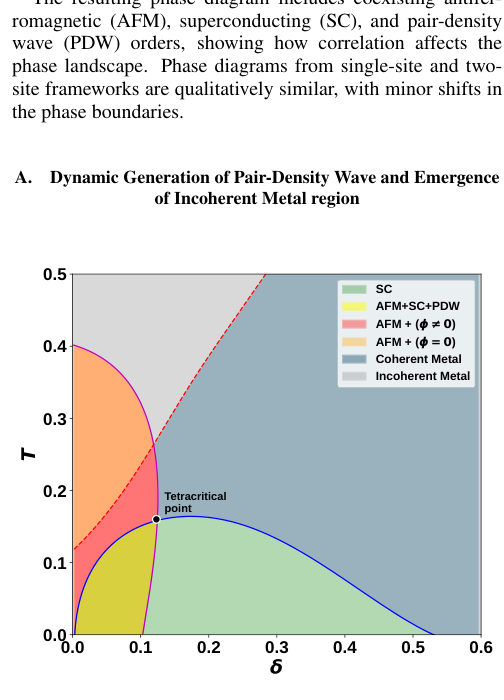
<figcaption class="paper-figure-caption"><b>Fig 1.</b> FIG. 1: Temperature–doping (T −δ) phase diagram for the dynamical emergence of a d-wave triplet pair-density-wave (PDW) from the coexistence of antiferromagnetism (AFM) and d-wave singlet superconductivity (SC) and the emergence of an incoherent metal region.</figcaption>
</figure>
<figure class="paper-figure-card">
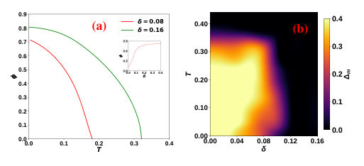
<figcaption class="paper-figure-caption"><b>Fig 2.</b> FIG. 3: (a) Temperature dependence of ϕ for δ = 0.08 and δ = 0.16. Inset: Doping dependence of ϕ at fixed temperature T = 0.08. (b) Intensity plot of the ∆m, in the T −δ phase space. The color scale represents the magnitude of ∆m.</figcaption>
</figure>
<figure class="paper-figure-card">

<figcaption class="paper-figure-caption"><b>Fig 3.</b> Fig. 3(a) shows the temperature dependence of the rotor condensate ϕ for different values of the doping δ. The quantity serves as a measure of quantum phase coherence in the rotor sector. As the temperature increases, thermal fluctuations enhance the disorder of the rotor phase θ, thereby suppressing phase coherence. Consequently, ϕ decreases monotonically with increasing T and eventually vanishes. For a given temperature, ϕ is larger at higher doping, reflecting the enhanced rotor kinetic energy and the greater stability of charge coherence away from half-filling.</figcaption>
</figure>
<figure class="paper-figure-card">

<figcaption class="paper-figure-caption"><b>Fig 4.</b> FIG. 2: Interaction-driven evolution of the ordered phases in the temperature-doping plane. (a) AFM phase boundary, (b) SC phase boundary, and (c) PDW phase boundary for several values of U. (d) Three-dimensional visualization of the PDW coexistence region in δ, T, U space. The color coding in all panels corresponds to the value of U.</figcaption>
</figure>
<figure class="paper-figure-card">
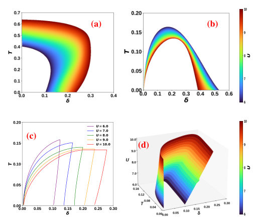
<figcaption class="paper-figure-caption"><b>Fig 5.</b> Fig. 2(c) shows the evolution of the PDW phase boundary</figcaption>
</figure>
</div>

<p><strong>Summary.</strong> This theoretical work explores the complex interplay between Antiferromagnetism, d-wave Superconductivity, and Pair Density Wave formation in strongly correlated electron systems. Using a slave-rotor mean-field approach, the authors demonstrate that PDW order emerges dynamically in the coexistence region of AFM and SC. The study provides detailed spectral analysis showing a crossover from coherent to incoherent metallic behavior as charge coherence is lost.</p>
<p><strong>Why it may be interesting.</strong> The explicit treatment of charge-spin separation via the rotor degree of freedom provides a powerful, non-conventional tool to analyze the interplay between magnetism, superconductivity, and charge localization in correlated materials.</p>
<details>
<summary>Detailed structure</summary>
<p><strong>Main problem.</strong> The study investigates the dynamical emergence of a Pair Density Wave (PDW) state driven by the interplay between Antiferromagnetism (AFM) and singlet d-wave Superconductivity (SC) in a strongly correlated doped system.</p>
<p><strong>Main result.</strong> The authors find that PDW order emerges dynamically in the AFM-SC coexistence region, and the system undergoes a crossover from a coherent to an incoherent metallic state as charge coherence is suppressed.</p>
<p><strong>Method.</strong> The analysis employs a slave-rotor mean-field framework, decomposing the electron into spinon and rotor degrees of freedom to capture strong correlation effects.</p>
<p><strong>Model / system.</strong> The model is a strongly correlated electron system on a 2D square lattice, described by a Hamiltonian involving hopping, onsite repulsion (U), and terms coupling to SC and PDW order parameters.</p>
<p><strong>Key observables.</strong> AFM, SC, and PDW order parameters; the rotor condensate amplitude (phi) characterizing charge coherence; and momentum-resolved spectral functions A(k, omega).</p>
<p><strong>Important parameters / regimes.</strong> Doping ($\delta$), Temperature ($T$), and the onsite repulsion strength ($U$).</p>
<p><strong>Assumptions / limitations.</strong> The formalism relies on slave-rotor mean-field theory, and improvements are made by using a two-site cluster formulation over a single-site approximation.</p>
<p><strong>Figures summary.</strong> Figures illustrate the $T-\delta$ phase diagram showing PDW emergence, the evolution of phase boundaries with increasing U, and momentum-resolved spectral functions distinguishing coherent and incoherent excitations.</p>
<p><strong>Paper structure.</strong> The paper systematically develops the slave-rotor mean-field theory, calculates the free energy by diagonalizing coupled spinon and rotor Hamiltonians, and analyzes the resulting spectral functions across different ordered phases (AFM, SC, Coexistence).</p>
</details>
<details>
<summary>Abstract</summary>
<p>We investigate the dynamical emergence of a state driven by the interplay between antiferromagnetism (AFM) and singlet $d$-wave superconductivity (SC) within a slave-rotor mean-field framework. By decomposing the electron into charge and spin degrees of freedom, the formalism captures strong-correlation effects beyond conventional mean-field approaches. A PDW order is found to emerge dynamically in the coexistence region of AFM and SC. The AFM-SC coexistence region is significantly modified with correlation, leading to a systematic shift of the tetra-critical point. The doping and temperature evolution of the AFM, SC, and PDW order parameters, together with the rotor condensate amplitude $φ$, which characterizes charge coherence, shows a crossover from a coherent to an incoherent metal with the suppression of coherent quasi-particle spectral weight. Moreover, in the AFM + $(φ\neq 0)$ region, coherent quasi-particle bands coexist with incoherent Hubbard-like excitations, whereas only incoherent spectral features survive in the AFM + $(φ= 0)$ regime. The SC phase exhibits nodal quasi-particles consistent with $d$-wave pairing.</p>
</details>
<p><sub><a href="#top">↑ back to top</a></sub></p>

<p><a id="paper-2608.29062"></a></p>
<h3 id="enhanced-diffusion-from-twist-angle-disorder"><a href="http://arxiv.org/abs/2608.29062v1">Enhanced Diffusion from Twist-Angle Disorder</a></h3>
<p><strong>Authors:</strong> Nicole S Ticea, Yi-Ming Wu<br>
<strong>Type:</strong> theory · <strong>Category:</strong> disordered systems and neural networks · <strong>PDF:</strong> <a href="https://arxiv.org/pdf/2608.29062v1">https://arxiv.org/pdf/2608.29062v1</a><br>
<strong>Analysis basis:</strong> full PDF text, analyzed in chunks
<strong>Topic relevance:</strong> <code>Keldysh / 2PI / non-Gaussian methods</code> <strong>3/5</strong></p>
<div class="figure-strip-hint">↔ Scroll figures horizontally</div>
<div class="paper-figures-scroll">
<figure class="paper-figure-card">
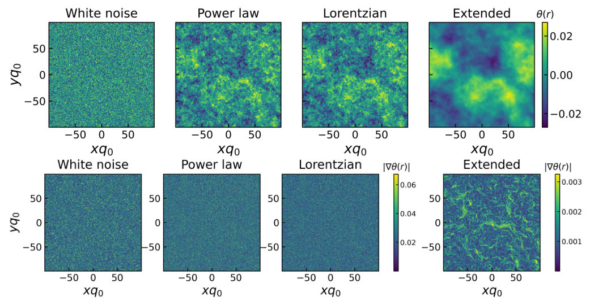
<figcaption class="paper-figure-caption"><b>Fig 1.</b> FIG. 1. Top row: sampling θ(r) using four different covariance kernels: uncorrelated disorder, power-law-correlated disorder (α = 2), Lorentzian disorder (ξ = 20), and disorder generated by a kernel with quartic momentum contributions (α = 0, ξ = 20). Bottom row: |∇θ(r)| for the same covariance kernels.</figcaption>
</figure>
<figure class="paper-figure-card">
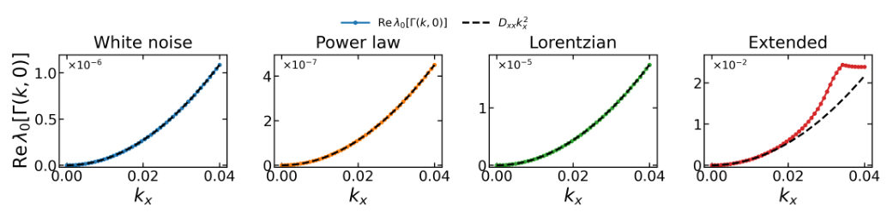
<figcaption class="paper-figure-caption"><b>Fig 2.</b> FIG. 2. Lowest (density) mode for the four different covariance kernels described earlier, calculated by discretising the Fermi surface into 720 angular patches. The strength of the trigonal warping is set to η = 0.03. Data is connected by solid lines; quadratic fit is overlaid with dashes. Note the difference in scales across the models.</figcaption>
</figure>
<figure class="paper-figure-card">
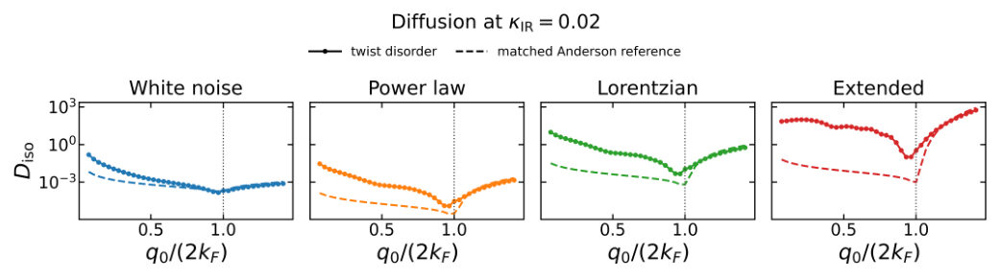
<figcaption class="paper-figure-caption"><b>Fig 3.</b> FIG. 3. Isotropic diffusivity, Diso = (Dxx + Dyy)/2, for the four covariance kernels described earlier, calculated by discretising the Fermi surface into 720 angular patches. The strength of the trigonal warping is set to η = 0.03. The Anderson reference is a constant fermion scattering kernel matched to the mean rate of the twist-angle disorder scattering integrated across the Fermi surface.</figcaption>
</figure>
</div>

<p><strong>Summary.</strong> This work theoretically analyzes the impact of spatially varying twist-angle disorder on electronic transport in moiré superlattices. By modeling the disorder using a geometric constraint analogous to electromagnetism, the authors show that this specific type of disorder suppresses momentum scattering. The problem is successfully formulated using a Non-linear Sigma Model, yielding quantitative predictions for enhanced electron diffusivity.</p>
<p><strong>Why it may be interesting.</strong> The explicit mapping to an NLSM and the calculation of transport coefficients in the presence of geometric constraints provide a powerful, non-trivial extension to standard theories of disorder in condensed matter.</p>
<details>
<summary>Detailed structure</summary>
<p><strong>Main problem.</strong> The study investigates how twist-angle disorder affects the single-particle properties and transport (diffusivity) of electrons in twisted bilayer systems.</p>
<p><strong>Main result.</strong> The geometric scattering constraints imposed by the twist structure substantially suppress momentum relaxation compared to simple white noise disorder, leading to an enhanced diffusivity.</p>
<p><strong>Method.</strong> The analysis employs advanced theoretical techniques, including the replica trick, mapping the problem onto a Non-linear Sigma Model (NLSM), and performing disorder averaging via Wigner transforms.</p>
<p><strong>Model / system.</strong> The system is based on twisted bilayer materials (like TBLG) where the moiré potential is modulated by a spatially varying twist angle disorder. The disorder is modeled mathematically as the curl of the relative displacement field.</p>
<p><strong>Key observables.</strong> Diffusivity ($D$), disorder-induced correlation function $ar{g}(r)$, and the effective action derived from the NLSM.</p>
<p><strong>Important parameters / regimes.</strong> The disorder correlation length, the moiré lattice scale, and the strength of the disorder kernel (e.g., power-law vs. Lorentzian).</p>
<p><strong>Assumptions / limitations.</strong> The disorder correlation length is assumed much larger than the moiré lattice scale, allowing for Wigner transform approximations and averaging over the moiré unit cell.</p>
<p><strong>Figures summary.</strong> Figures illustrate the spatial sampling of the twist angle disorder using various covariance kernels and compare the calculated isotropic diffusivity against a standard Anderson reference disorder, showing enhancement.</p>
<p><strong>Paper structure.</strong> The paper progresses from defining the disorder Hamiltonian and using the replica trick to derive the effective disorder-averaged coupling $ar{g}(R)$. It then maps the problem to an NLSM, calculates the effective action, and finally extracts the transport properties by analyzing the small-$k$ behavior of the Green's function correlator.</p>
</details>
<details>
<summary>Abstract</summary>
<p>We consider the effect of twist-angle disorder on the single-particle properties of twisted bilayer systems. These materials are a natural playground for studying how tiny, uncontrolled spatial variations may become unusually consequential; a local change in the twist geometry can give rise to spatially-correlated alterations of the parent Hamiltonian, which in turn affect the coarse-grained properties of the substrate such as transport and ordering tendencies. In analogy to electrodynamics, where the magnetic field is given by the curl of the vector potential, we model the twist angle as the curl of the relative displacement between the two bilayers. We find that geometric scattering constraints imposed here by the twist structure substantially suppress momentum relaxation relative to mean-rate-matched white noise. We quantify these effects and show that the problem can be mapped onto a non-linear sigma model (NLSM).</p>
</details>
<p><sub><a href="#top">↑ back to top</a></sub></p>

<p><a id="paper-2608.29438"></a></p>
<h3 id="the-resource-cost-of-magic-in-a-code-block"><a href="http://arxiv.org/abs/2608.29438v1">The resource cost of magic in a code block</a></h3>
<p><strong>Authors:</strong> Jiachen Shen, Hui Zhong<br>
<strong>Type:</strong> theory · <strong>Category:</strong> quantum information and computing · <strong>PDF:</strong> <a href="https://arxiv.org/pdf/2608.29438v1">https://arxiv.org/pdf/2608.29438v1</a><br>
<strong>Analysis basis:</strong> full PDF text, analyzed in chunks
<strong>Topic relevance:</strong> <code>quantum measurements</code> <strong>3/5</strong></p>
<div class="figure-strip-hint">↔ Scroll figures horizontally</div>
<div class="paper-figures-scroll">
<figure class="paper-figure-card">
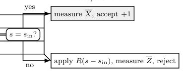
<figcaption class="paper-figure-caption"><b>Fig 1.</b> Figure 1: One member of the split-readout family of definition 6, drawn as the operations a machine performs. Weak Z-rotations sit on some of the data qubits, one per qubit. A single exact round of stabilizer measurement follows and writes its outcomes to a classical record. Everything after the dashed cut reads that record and nothing else. If the record matches the syndrome the block came in with, the protocol measures the logical X and keeps the +1 outcome, and that branch is the accepted fibre whose effect this paper bounds. Otherwise it corrects, measures the logical Z and rejects. The rejected branch changes no accepted statistic, and proposition 3 needs it, since it is what absorbs...</figcaption>
</figure>
</div>

<p><strong>Summary.</strong> This theoretical work derives a tight upper bound on the resource cost ('magic') associated with post-selected logical measurements in quantum error-correcting codes. By analyzing the accepted effect through an outcome-by-outcome resource theory lens, the authors prove the cost decays exponentially with the code distance, $\exp[-\Omega(d \log d)]$. This result is significant because it quantifies the fundamental resource limitations for implementing complex quantum operations.</p>
<p><strong>Why it may be interesting.</strong> It provides a quantitative, resource-theoretic understanding of the fundamental limitations on measurement fidelity and resource consumption in fault-tolerant quantum computation, which is crucial for designing practical quantum hardware.</p>
<details>
<summary>Detailed structure</summary>
<p><strong>Main problem.</strong> The paper aims to rigorously bound the resource cost, or 'magic,' associated with performing a post-selected logical measurement within a quantum code block.</p>
<p><strong>Main result.</strong> The accepted magic, when multiplied by the acceptance probability, is bounded by $\exp[-\Omega(d \log d)]$, a bound that is shown to be attainable by a specific protocol.</p>
<p><strong>Method.</strong> The analysis employs resource theory techniques, reading the accepted effect outcome-by-outcome against the free set of magic, and utilizes exact-component expansions over connected clusters of insertion histories.</p>
<p><strong>Model / system.</strong> The system is a single code block encoding one logical qubit, analyzed using an adaptive protocol involving measurement, feed-forward, and acceptance, relevant to fault-tolerant quantum computation.</p>
<p><strong>Key observables.</strong> Magic (resource cost), Acceptance Probability, Code Distance ($d$), and the resulting bound $\exp[-\Omega(d \log d)]$.</p>
<p><strong>Important parameters / regimes.</strong> Code distance ($d$), the certified threshold ($D \propto d$), and the structure of the exact-recovery skeleton.</p>
<p><strong>Assumptions / limitations.</strong> The resource cells must sit inside a bounded-spread exact-recovery skeleton, and the analysis relies on the structure of the accepted effect being read outcome-by-outcome.</p>
<p><strong>Figures summary.</strong> Figure 1 illustrates the operations of a split-readout family, detailing syndrome measurement, classical recording, and the separation into accepted and rejected measurement fibres.</p>
<p><strong>Paper structure.</strong> The paper develops bounds by first establishing an unconditional bound, then presenting the main result using an exact-component expansion. It certifies the threshold using a circuit model (stabilizer measurement followed by split readout) and concludes by showing a protocol that attains the derived exponential bound.</p>
</details>
<details>
<summary>Abstract</summary>
<p>We bound the magic of a post-selected logical measurement by the resource that produced it. The setting is one code block with one logical qubit and an adaptive protocol that measures, feeds forward and accepts. The witness reads the accepted effect against the free set of the resource theory of magic, outcome by outcome and not on the averaged channel, since a channel can be free while one of its outcomes measures the magic axis. Our first bound is unconditional. The accepted magic is at most a constant times the summed distance of the cells from the free set. The second is the main result. When the resource cells sit inside a bounded-spread exact-recovery skeleton, the recovery puts every insertion history below a threshold onto a single free branch, transcript by transcript, so only connected clusters reaching the threshold contribute and an exact-component expansion controls their weight. With a threshold linear in the code distance, polynomially many cells of bounded insertion degree and per-cell dilation amplitude $O(1/d)$, the accepted magic times the acceptance probability is at most $\exp[-Ω(d\log d)]$. Post-selection is disposed of before accepted transcripts are summed, so a branch of vanishing probability cannot be amplified into a magic effect. The threshold is certified from a circuit, and we run it on one exact round of stabilizer measurement followed by a split readout, which measures logical $X$ on the accepted fibre and logical $Z$ on the rejected ones. That certifies a threshold equal to the code distance for every single-layer pattern of weak $Z$-rotations, one per data qubit, so the hypotheses are met by a family and not one design. A member carries magic only if its support contains a logical $Z$ string. One member attains the exponent, again at the level of the accepted effect. Suppression is set by the threshold and not by the topology of the block.</p>
</details>
<p><sub><a href="#top">↑ back to top</a></sub></p>

<p><a id="paper-2608.29282"></a></p>
<h3 id="anomalous-frequency-shift-in-low-loss-superconducting-granular-aluminum-resonators"><a href="http://arxiv.org/abs/2608.29282v1">Anomalous Frequency Shift in Low-Loss Superconducting Granular Aluminum Resonators</a></h3>
<p><strong>Authors:</strong> Patrick Winkel, Daniil S. Antonenko, Vishakha Gupta, Neel Thakur, Pavel Kurilovich, Luigi Frunzio, Leonid I. Glazman, Robert J. Schoelkopf<br>
<strong>Type:</strong> experiment · <strong>Category:</strong> other · <strong>PDF:</strong> <a href="https://arxiv.org/pdf/2608.29282v1">https://arxiv.org/pdf/2608.29282v1</a><br>
<strong>Analysis basis:</strong> full PDF text, analyzed in chunks
<strong>Topic relevance:</strong> <code>correlated / nonlocal dissipation</code> <strong>2/5</strong> · <code>driven-dissipative phase transition</code> <strong>2/5</strong> · <code>non-equilibrium universality</code> <strong>2/5</strong> · <code>Keldysh / 2PI / non-Gaussian methods</code> <strong>1/5</strong> · <code>QC/QI experiment</code> <strong>1/5</strong> · <code>analog quantum simulation</code> <strong>1/5</strong> · <code>methods for driven-dissipative</code> <strong>1/5</strong> · <code>quantum measurements</code> <strong>1/5</strong> · <code>quantum optics experiment</code> <strong>1/5</strong></p>
<div class="figure-strip-hint">↔ Scroll figures horizontally</div>
<div class="paper-figures-scroll">
<figure class="paper-figure-card">
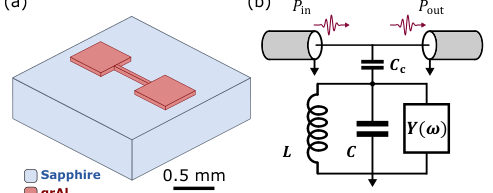
<figcaption class="paper-figure-caption"><b>Fig 1.</b> FIG. 1. Lumped-element granular aluminum mi- crowave resonators. (a) The sample design consists of lumped-element microwave resonators with a planar, millime- ter scale two-pad capacitor geometry, connected via a central inductive strip 30 µm −500 µm in length [22]. The devices are fabricated on sapphire substrates with superconducting granular aluminum (grAl) thin films of varying normal-state resistivity ρn and constant thickness d = 91 ± 1 nm. For two devices, the capacitor electrodes are made from pure Al. (b) The measurement scheme of the superconducting resonator. The equivalent circuit of the resonator consists of three ele- ments: C and L represent the electromagnetic contributions...</figcaption>
</figure>
<figure class="paper-figure-card">
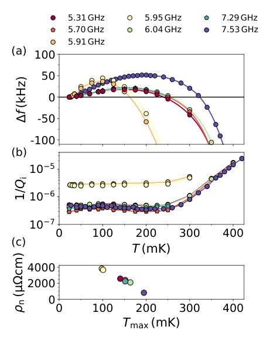
<figcaption class="paper-figure-caption"><b>Fig 2.</b> FIG. 2. Low-power temperature dependence of re- sponse at microwave frequencies: (a) Shift in the res- onance frequency ∆f as a function of the fridge base tem- perature T measured in the single-photon regime (¯n ≈1) for seven devices. All curves are shifted to align them at the low- est temperature measured. In all devices, we observe the same systematic behavior: The frequency increases with increasing temperature until it reaches a maximum at Tmax, after which it monotonically decreases due to the thermal activation of quasiparticles (QPs). (b) Internal loss Qi for the same de- vices measured in the same temperature range. Despite the significant changes in the resonance frequency, the...</figcaption>
</figure>
<figure class="paper-figure-card">
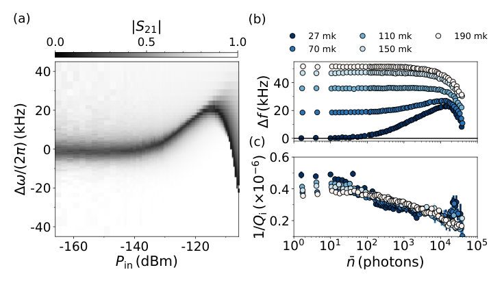
<figcaption class="paper-figure-caption"><b>Fig 3.</b> FIG. 3. Power and temperature dependence of the microwave response: (a) Magnitude of the complex transmission coefficient |S21| at T = 27 mK in the f0 = 7.53 GHz device as a function of the detuning ∆ω/(2π) = f −f0 of the drive frequency f with respect to the low power resonance frequency f0 and the estimated on-chip input power Pin. With increasing power, the resonance first shifts towards higher frequencies before starting to decrease, as expected. (b,c) Shift in the extracted resonance frequency ∆f = f0(T, ¯n)−f0(T = 27 mK, ¯n ≈1) (top panel) and internal loss rate 1/Qi (bottom panel) as a function of the mean photon number ¯n, evaluated with Eq. (1). Different curves correspond to...</figcaption>
</figure>
<figure class="paper-figure-card">
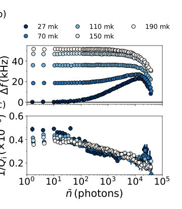
<figcaption class="paper-figure-caption"><b>Fig 4.</b> Figure 3 (b) displays the frequency shift in the f0 = 7.53 GHz device compared to the low-power and low- temperature reference value ∆f(T, ¯n) = f0(T, ¯n) − f0(T = 27 mK, ¯n ≈1), together with the internal loss rate. For the lowest temperature T = 27 mK, the reso- nance frequency increases as we increase the intra-cavity photon number ¯n until it reaches a maximum after which it continues to monotonically decrease.</figcaption>
</figure>
<figure class="paper-figure-card">
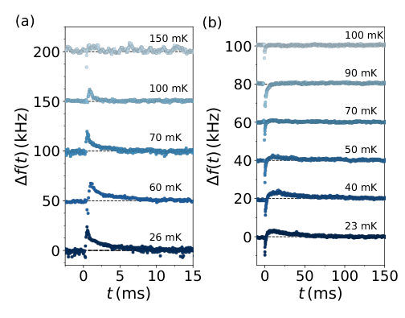
<figcaption class="paper-figure-caption"><b>Fig 5.</b> FIG. 4. High energy events. Characteristic time and tem- perature dependence of high energy events detected in sam- ples 7.53 GHz and 5.31 GHz. For better visibility, the curves are offset with respect to each other. Interestingly, unlike in most other superconducting resonators, the initial frequency shift can be either positive (panel a) or negative (panel b), depending on the sample. For all measured resonators, this initial spike is followed by a period of positive frequency shift, which then relaxes to the steady state over a longer timescale. In both devices, the positive frequency shift disappears with elevated base temperature, as also observed in the tempera- ture and power...</figcaption>
</figure>
</div>

<p><strong>Summary.</strong> This work investigates anomalous frequency shifts in superconducting granular aluminum resonators, finding that the frequency initially increases with temperature and power at low temperatures, contrary to standard TLS predictions. The authors propose a quasiparticle mechanism related to the granular structure to explain this anomaly. The findings are crucial for advancing superconducting circuits in quantum technology by pinpointing fundamental loss mechanisms.</p>
<p><strong>Why it may be interesting.</strong> The anomalous electrodynamics observed in superconducting resonators, particularly the deviation from standard TLS predictions, touches upon non-equilibrium dynamics and quasiparticle physics relevant to open quantum systems.</p>
<details>
<summary>Detailed structure</summary>
<p><strong>Main problem.</strong> The primary goal is to identify the dominant loss mechanisms and explain the anomalous frequency shifts observed in low-loss superconducting granular aluminum (grAl) resonators.</p>
<p><strong>Main result.</strong> The resonance frequency exhibits an initial positive shift with increasing temperature and power at low T, contradicting standard Two-Level System (TLS) predictions, which can partially be explained by superconducting quasiparticle effects in a granular system.</p>
<p><strong>Method.</strong> The study involves characterizing the complex admittance by measuring the resonance frequency and loss rate as functions of temperature and input power in the single-photon regime.</p>
<p><strong>Model / system.</strong> The physical system is a superconducting resonator made from granular aluminum (grAl). Theoretical models considered include the TLS model and an alternative model treating grAl as an array of superconducting grains with spatially non-uniform superconducting gaps.</p>
<p><strong>Key observables.</strong> Resonance frequency shift ($\Delta f$), internal loss rate ($1/Q_i$), and their dependence on temperature ($T$) and readout power ($P_{in}$).</p>
<p><strong>Important parameters / regimes.</strong> Low temperatures (down to $\sim 100$ mK), single-photon regime ($ar{n} \approx 1$), and the superconducting gap structure.</p>
<p><strong>Assumptions / limitations.</strong> The standard TLS model is assumed to be insufficient for describing the low-temperature frequency dependence, and the quasiparticle model is used to explain the initial anomalous behavior.</p>
<p><strong>Figures summary.</strong> Figures show the temperature dependence of frequency and loss, the power dependence of frequency shift, and the time dynamics of frequency following high-energy events.</p>
<p><strong>Paper structure.</strong> The paper systematically presents measurements showing deviations from standard models (TLS), proposes a quasiparticle mechanism to explain the low-T anomalies, and discusses limitations regarding the loss rate and high-energy response.</p>
</details>
<details>
<summary>Abstract</summary>
<p>Superconducting high-kinetic inductance materials like granular aluminum (grAl) are a versatile part of the circuit quantum electrodynamics (cQED) toolbox, provided their losses at microwave frequencies are low enough. To further advance the use of grAl in quantum devices, it is indispensable to identify the dominant loss mechanisms. The standard approach pairs electromagnetic simulations of resonator geometry with measured temperature and power dependence of resonance frequency and loss rate. Most materials follow the phenomenological theory of two-level systems (TLSs) at low temperatures, resulting in an initial decrease of the resonance frequency with increasing temperature. In our work, we observe an opposite behavior at the lowest temperatures: The resonance frequency initially increases with both temperature and readout power, contradicting the standard TLS model predictions. We are able to explain a part of the data by an alternative mechanism associated with the effect of superconducting quasiparticles in a granular system with spatially-nonuniform gap. Yet, the observed change in the resonance frequency with temperature is not matched by a proportional change in the loss rate. We also observe anomalous positive frequency responses following high-energy events, characterized by several time scales. While anomalous behavior has been reported previously in grAl, the disagreement with standard models is particularly visible in our devices thanks to their exceptionally low loss rates.</p>
</details>
<p><sub><a href="#top">↑ back to top</a></sub></p>

<p><a id="paper-2608.30660"></a></p>
<h3 id="trade-off-between-cooling-step-count-and-geometric-implementation-cost-in-non-markovian-algorithmic-cooling"><a href="http://arxiv.org/abs/2608.30660v1">Trade-off between Cooling-Step Count and Geometric Implementation Cost in Non-Markovian Algorithmic Cooling</a></h3>
<p><strong>Authors:</strong> Yohei Azumai, Yoshihiko Hasegawa<br>
<strong>Type:</strong> both · <strong>Category:</strong> quantum information and computing · <strong>PDF:</strong> <a href="https://arxiv.org/pdf/2608.30660v1">https://arxiv.org/pdf/2608.30660v1</a><br>
<strong>Analysis basis:</strong> full PDF text, analyzed in chunks
<strong>Topic relevance:</strong> <code>correlated / nonlocal dissipation</code> <strong>2/5</strong> · <code>driven-dissipative phase transition</code> <strong>2/5</strong> · <code>methods for driven-dissipative</code> <strong>2/5</strong> · <code>Keldysh / 2PI / non-Gaussian methods</code> <strong>1/5</strong> · <code>non-equilibrium universality</code> <strong>1/5</strong> · <code>quantum measurements</code> <strong>1/5</strong></p>
<div class="figure-strip-hint">↔ Scroll figures horizontally</div>
<div class="paper-figures-scroll">
<figure class="paper-figure-card">
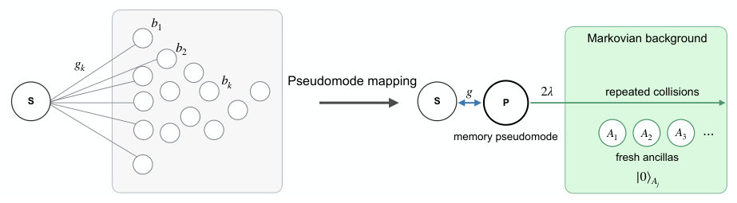
<figcaption class="paper-figure-caption"><b>Fig 1.</b> FIG. 1. Pseudomode representation of the Lorentzian reservoir. (a) The target system S interacts with a structured bosonic reservoir composed of modes bk. (b) Under the pseudomode mapping, the reservoir memory is represented by a pseudomode P, which coherently exchanges excitations with S, while the residual Markovian background is implemented by repeated interactions with fresh ancillas Aj.</figcaption>
</figure>
<figure class="paper-figure-card">
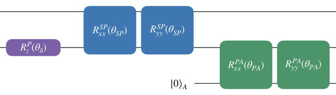
<figcaption class="paper-figure-caption"><b>Fig 2.</b> FIG. 2. Gate decomposition of one pseudomode collision step. The detuning, system-pseudomode exchange, and pseudomode- ancilla collision operations are grouped as Uδ, USP , and UP A, respectively. The ancilla is initialized in |0⟩A, traced out after the collision, and replaced by a fresh ancilla at the next step. The explicit construction, continuous-time limit, and numerical validation are given in Appendix B.</figcaption>
</figure>
<figure class="paper-figure-card">
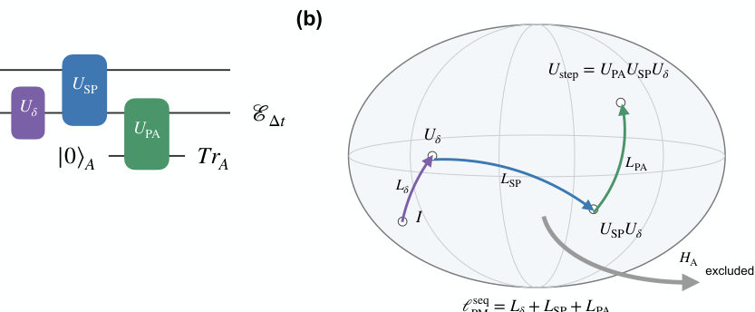
<figcaption class="paper-figure-caption"><b>Fig 3.</b> FIG. 3. Geometric representation of one pseudomode collision step. (a) The sequential circuit implements Ustep = UP AUSP Uδ on the enlarged system eS = S + P and a fresh ancilla A, which is traced out after the collision. (b) The detuning, system- pseudomode exchange, and pseudomode-ancilla collision define consecutive segments of the specified unitary path, with lengths Lδ, LSP , and LP A, respectively. Their sum gives ℓseq PM = Lδ + LSP + LP A. The depicted path is not minimized over alternative circuit paths or unitary dilations. Details are given in Appendix C.</figcaption>
</figure>
<figure class="paper-figure-card">
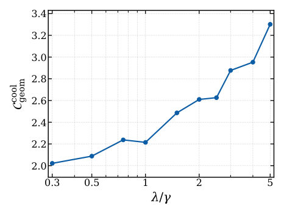
<figcaption class="paper-figure-caption"><b>Fig 4.</b> FIG. 5. Accumulated geometric cooling cost Ccool geom(λ; ϵ) ob- tained from the matrix-based simulation. The cost is evalu- ated from Eq. (4) using Ncool(λ; ϵ) and the one-step geometric length ℓseq PM(λ). The parameters are the same as in Fig. 4. The line is a guide for the eye.</figcaption>
</figure>
<figure class="paper-figure-card">
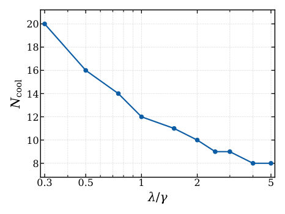
<figcaption class="paper-figure-caption"><b>Fig 5.</b> FIG. 4. Cooling-step count Ncool(λ; ϵ) obtained from matrix- based density-matrix propagation as a function of the nor- malized spectral width λ/γ. The analysis is restricted to 0.3 ≤λ/γ ≤5, over which the collision circuit reliably ap- proximates the continuous pseudomode dynamics, as verified in Appendix B. The target is initialized with the Bloch vector (0.5, 0.5, 0.5). The parameters are γ∆t = 0.1, δ = 0, ϵ = 0.15, and Nmax = 20. The line is a guide for the eye.</figcaption>
</figure>
</div>

<p><strong>Summary.</strong> This paper analyzes the resource trade-off in non-Markovian quantum cooling, balancing cooling efficiency (steps required) against the physical cost of implementation. By mapping the complex dynamics onto a collision circuit, the authors quantify the geometric cost associated with reservoir memory. They conclude that while memory can improve cooling steps, it often increases the overall resource cost, guiding better hardware-aware protocol design.</p>
<p><strong>Why it may be interesting.</strong> This work provides a crucial resource-based perspective on open quantum systems, directly linking the physical mechanism of memory (non-Markovianity) to quantifiable hardware implementation costs, which is vital for designing practical quantum computation protocols.</p>
<details>
<summary>Detailed structure</summary>
<p><strong>Main problem.</strong> The paper investigates the fundamental trade-off between achieving high quantum cooling performance and the associated resource cost when implementing non-Markovian quantum cooling protocols.</p>
<p><strong>Main result.</strong> A clear trade-off is established: suppressing reservoir memory reduces the required cooling steps but generally increases the overall geometric implementation cost.</p>
<p><strong>Method.</strong> The authors use a pseudomode mapping to represent non-Markovian dynamics as a Markovian process implemented via a repeated collision circuit, whose cost is quantified using a geometric path length formulation.</p>
<p><strong>Model / system.</strong> The system is a single-qubit undergoing algorithmic cooling via interaction with a reservoir memory, modeled using a damped Jaynes-Cummings Hamiltonian and analyzed through its pseudomode representation.</p>
<p><strong>Key observables.</strong> Cooling-step count ($N_{	ext{cool}}$) and geometric implementation cost ($C_{	ext{cool}}^{	ext{geom}}$).</p>
<p><strong>Important parameters / regimes.</strong> Reservoir spectral width ($\lambda$), which controls the degree of non-Markovianity ($\lambda/\gamma$ regime).</p>
<p><strong>Assumptions / limitations.</strong> The analysis focuses on the single-excitation sector, and the resource cost is based on the geometric path length in the collision circuit representation.</p>
<p><strong>Figures summary.</strong> Figures illustrate the pseudomode mapping, the gate decomposition of a collision step, the geometric path defining the cost, and plots showing $N_{	ext{cool}}$ and minimum excited-state population versus the spectral width ratio $\lambda/\gamma$.</p>
<p><strong>Paper structure.</strong> The paper first introduces the physical model and the pseudomode mapping. It then details the calculation of the geometric cost for the collision circuit. Finally, it analyzes the trade-off by comparing cooling performance metrics across different reservoir memory regimes.</p>
</details>
<details>
<summary>Abstract</summary>
<p>Quantum cooling is important for reliable quantum computation but involves a trade-off between cooling performance and implementation resources. Although reservoir memory can improve particular aspects of cooling performance, the associated resource cost, particularly for circuit implementation, remains insufficiently understood. Here, we investigate how reservoir memory affects the trade-off between cooling performance quantified by the cooling-step count and geometric implementation cost in single-qubit heat-bath algorithmic cooling. Using a pseudomode mapping, we represent the non-Markovian damped Jaynes--Cummings dynamics by a repeated collision circuit and evaluate its geometric implementation cost. Using matrix-based simulations and an implementation on the ibm_kawasaki Heron r2 processor, we identify a trade-off: suppressing reservoir memory reduces the cooling-step count but generally increases the geometric protocol cost. Our work provides a resource-based perspective on reservoir engineering for algorithmic cooling.</p>
</details>
<p><sub><a href="#top">↑ back to top</a></sub></p>

<p><a id="paper-2608.29064"></a></p>
<h3 id="duality-between-twist-angle-disorder-and-non-hermitian-disorder"><a href="http://arxiv.org/abs/2608.29064v1">Duality Between Twist-Angle Disorder and Non-Hermitian Disorder</a></h3>
<p><strong>Authors:</strong> Yi-Ming Wu, Nicole S. Ticea<br>
<strong>Type:</strong> theory · <strong>Category:</strong> disordered systems and neural networks · <strong>PDF:</strong> <a href="https://arxiv.org/pdf/2608.29064v1">https://arxiv.org/pdf/2608.29064v1</a><br>
<strong>Analysis basis:</strong> full PDF text, analyzed in chunks
<strong>Topic relevance:</strong> <code>Keldysh / 2PI / non-Gaussian methods</code> <strong>2/5</strong> · <code>analog quantum simulation</code> <strong>2/5</strong> · <code>correlated / nonlocal dissipation</code> <strong>1/5</strong> · <code>driven-dissipative phase transition</code> <strong>1/5</strong> · <code>methods for driven-dissipative</code> <strong>1/5</strong> · <code>non-equilibrium universality</code> <strong>1/5</strong></p>
<div class="figure-strip-hint">↔ Scroll figures horizontally</div>
<div class="paper-figures-scroll">
<figure class="paper-figure-card">
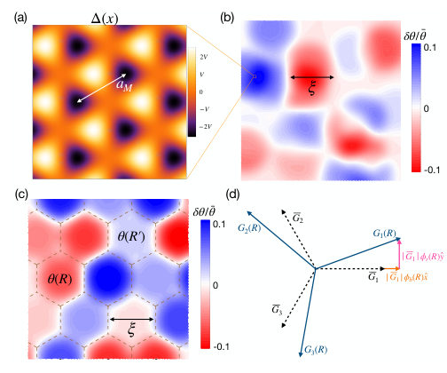
<figcaption class="paper-figure-caption"><b>Fig 1.</b> FIG. 1. (a) Moir´e potential ∆(x) with constant twist angle, defined in Eq.(1), with the parameter φ ≈π/2. The peri- odicity is set by the moir´e unit cell length aM. (b) In the presence of twist-angle disorder, there are domains of uni- form twist angle whose length is set by ξ ≫aM. (c) Our model of twist-angle disorder. The system is divided into do- mains of the same size ξ, labeled by R. Within each supercell the twist angle is approximated as a constant, which permits a set of local lattice vectors aj(R), and hence Gj(R). (d) We parametrize the variations of Gj(R) by two scalar fields ϕr(R) and ϕb(R), see Eq.(3)</figcaption>
</figure>
<figure class="paper-figure-card">
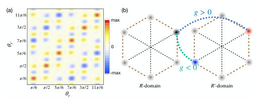
<figcaption class="paper-figure-caption"><b>Fig 2.</b> FIG. 2. (a) Plot of g(r, r′; R−R′) as a function of θr and θr′ when |R −R′| is fixed and |r| = |r′| is set to be ∼ξ/2. (b) The peak (maximum and minimum) positions in (a) implies only six ‘hot spot’ at each domain boundary are effectively correlated , and correlations between different domains are such that when θr = θr′, g &gt; 0, and when θr = θr′ ±π, g &lt; 0, as implied from (a).</figcaption>
</figure>
<figure class="paper-figure-card">
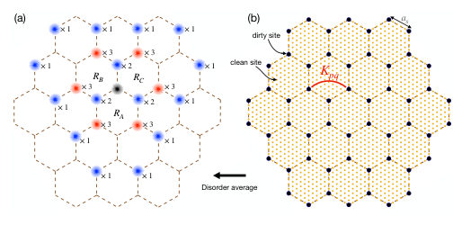
<figcaption class="paper-figure-caption"><b>Fig 3.</b> FIG. 3. (a) Pattern of correlations with the central spot (black) induced by the twist-angle disorder when only the nearest neighbor domains are correlated (ℓν ∼ξ). Here the black spot correlates with the red ones positively, and with the blue ones negatively. The indicated integer multiples arise from the fact that we can view the black spot as the corners of RA, RB and RC domains. (b) In the tight-binding de- scription, the correlation in (a) can be equivalently induced by adding random onsite potentials to the corner sites (black dots), if the potential obey the same correlation v∗pvq = Kpq.</figcaption>
</figure>
</div>

<p><strong>Summary.</strong> This work studies twist-angle disorder in moiré heterobilayers, showing that the disorder averaging process leads to a profound duality. This duality maps the geometric disorder onto a problem involving non-Hermitian Hamiltonians. This provides a powerful new theoretical tool to understand transport phenomena, particularly how the system can evade Anderson localization.</p>
<p><strong>Why it may be interesting.</strong> The duality connects a geometrically induced disorder (twist angle) to a non-Hermitian framework, which is a key area of modern condensed matter theory relevant to open quantum systems and non-Hermitian physics.</p>
<details>
<summary>Detailed structure</summary>
<p><strong>Main problem.</strong> The paper investigates the physical consequences of random variations in the twist angle within moiré heterobilayer systems.</p>
<p><strong>Main result.</strong> It establishes a mathematical duality showing that twist-angle disorder is equivalent to coupling fermions to a non-Hermitian disorder, which can dynamically prevent Anderson localization.</p>
<p><strong>Method.</strong> The analysis employs the replica trick and cumulant expansion to average over the disorder fields, leading to an effective action.</p>
<p><strong>Model / system.</strong> The system is based on moiré heterobilayer systems (e.g., twisted bilayer WSe2/MoSe2), modeled by a continuum Hamiltonian subjected to random spatial variations in the twist angle.</p>
<p><strong>Key observables.</strong> Correlation functions between replicas, localization behavior, and the effective action terms ($S^{(1)}_{	ext{dis}}, S^{(2)}_{	ext{dis}}$).</p>
<p><strong>Important parameters / regimes.</strong> The analysis considers distinct length scales: Moiré lattice constant $\ll$ domain size $\ll$ system size, and the disorder correlation length $\ell_
u$.</p>
<p><strong>Assumptions / limitations.</strong> The disorder is modeled by random scalar fields governed by a specific probability distribution, and the analysis relies on weak disorder approximations.</p>
<p><strong>Figures summary.</strong> Figures illustrate the moiré potential under constant vs. disordered twist angles, the correlation pattern $g(r, r'; \delta R)$ showing positive and negative correlations, and the corresponding patterns in tight-binding descriptions.</p>
<p><strong>Paper structure.</strong> The paper introduces the model Hamiltonian with twist-angle disorder, applies the replica trick and cumulant expansion to average the disorder, derives the effective action, and finally establishes the duality with non-Hermitian disorder.</p>
</details>
<details>
<summary>Abstract</summary>
<p>We propose and study a model of moire heterobilayer systems where the twist angle remains uniform and well defined only within a finite range, but deforms randomly at larger distances. The local twist angle is then subject to a certain probability distribution that penalizes large fluctuations around its mean value. Within the framework of the replica trick, we show that disorder averaging produces a nontrivial correlation with alternating sign between replicas, maximized only close the boundary of each local domain and along certain directions. We show that for the low-energy moire bands, exactly the same correlation can be generated in a dual model where fermions are coupled to non-Hermitian disorder, which can evade Anderson localization dynamically. This duality provides a new perspective to investigate twist-angle disorder in moire systems, and unveils some of the essential differences between twist-angle disorder and conventional disorder.</p>
</details>
<p><sub><a href="#top">↑ back to top</a></sub></p>

<p><a id="paper-2608.29602"></a></p>
<h3 id="evolution-generators-for-complex-parameters"><a href="http://arxiv.org/abs/2608.29602v1">Evolution Generators for Complex Parameters</a></h3>
<p><strong>Authors:</strong> Jen-Yin Yeh, Chia-Yi Ju<br>
<strong>Type:</strong> theory · <strong>Category:</strong> other · <strong>PDF:</strong> <a href="https://arxiv.org/pdf/2608.29602v1">https://arxiv.org/pdf/2608.29602v1</a><br>
<strong>Analysis basis:</strong> full PDF text, analyzed in chunks
<strong>Topic relevance:</strong> <code>Keldysh / 2PI / non-Gaussian methods</code> <strong>2/5</strong> · <code>methods for driven-dissipative</code> <strong>2/5</strong> · <code>analog quantum simulation</code> <strong>1/5</strong> · <code>correlated / nonlocal dissipation</code> <strong>1/5</strong> · <code>driven-dissipative phase transition</code> <strong>1/5</strong> · <code>quantum measurements</code> <strong>1/5</strong></p>
<div class="figure-strip-hint">↔ Scroll figures horizontally</div>
<div class="paper-figures-scroll">
<figure class="paper-figure-card">
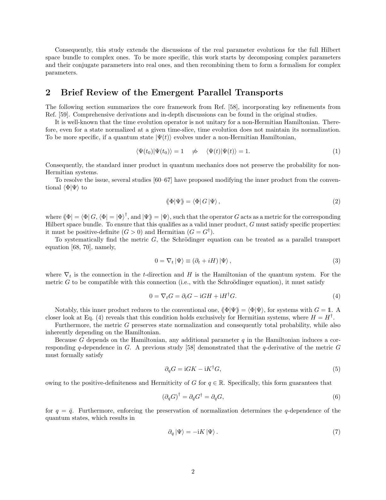
<figcaption class="paper-figure-caption"><b>Fig 1.</b> Low-resolution page preview, page 2</figcaption>
</figure>
<figure class="paper-figure-card">
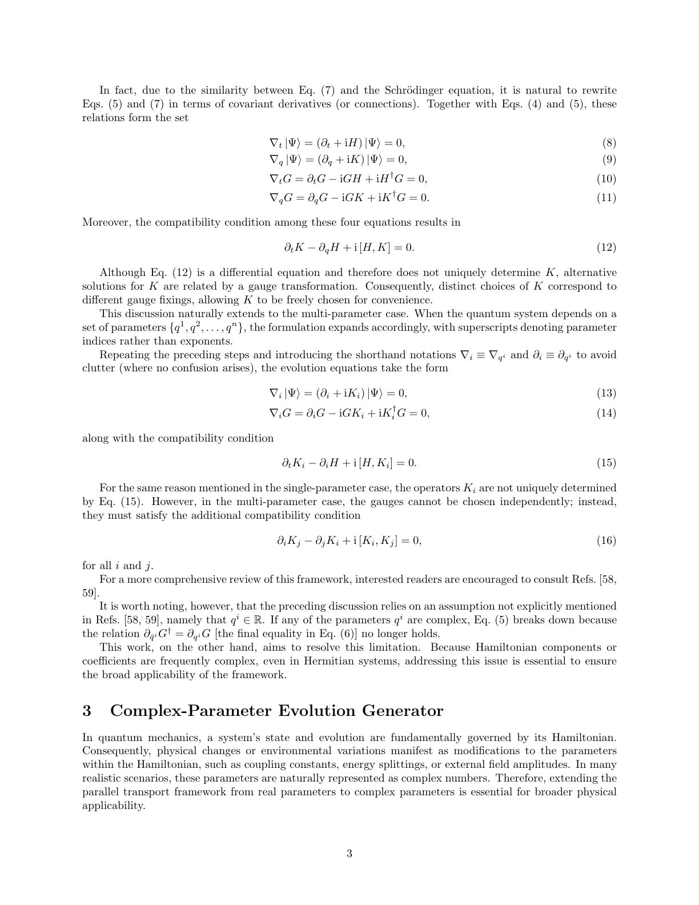
<figcaption class="paper-figure-caption"><b>Fig 2.</b> Low-resolution page preview, page 3</figcaption>
</figure>
<figure class="paper-figure-card">
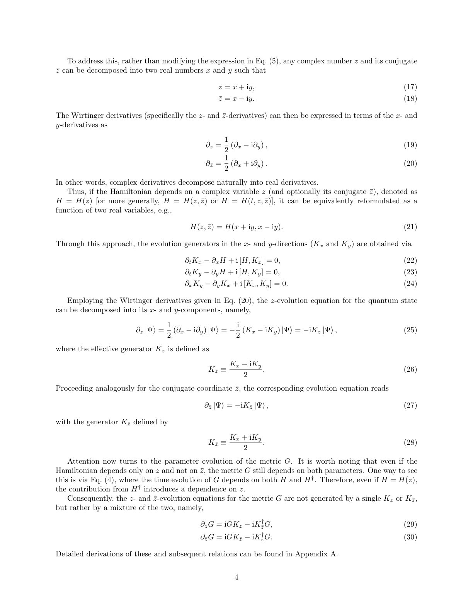
<figcaption class="paper-figure-caption"><b>Fig 3.</b> Low-resolution page preview, page 4</figcaption>
</figure>
<figure class="paper-figure-card">
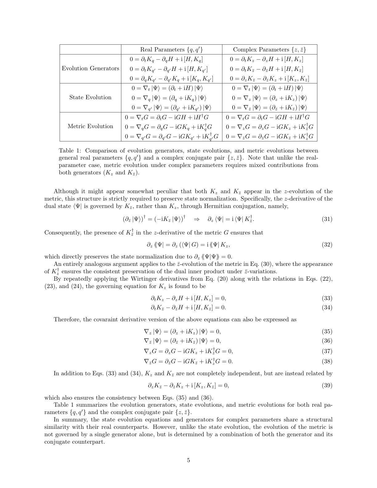
<figcaption class="paper-figure-caption"><b>Fig 4.</b> Low-resolution page preview, page 5</figcaption>
</figure>
<figure class="paper-figure-card">
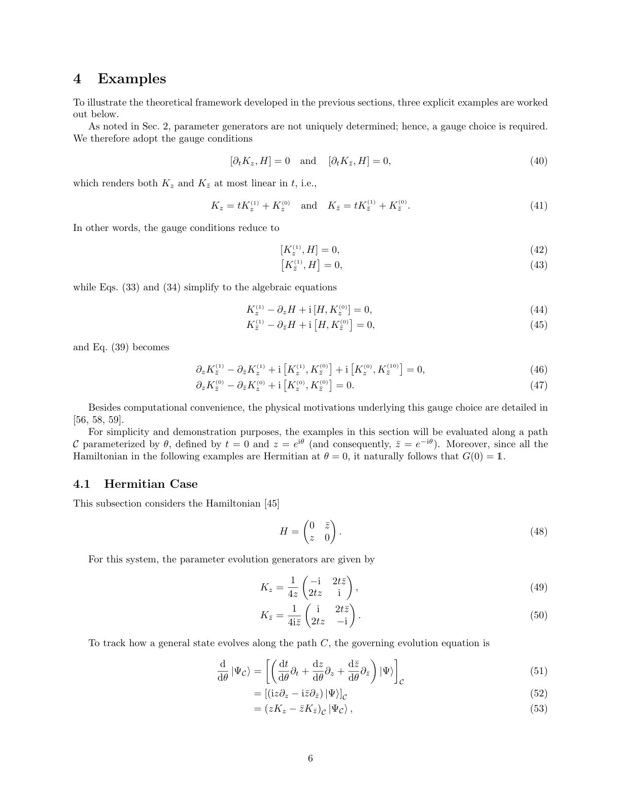
<figcaption class="paper-figure-caption"><b>Fig 5.</b> Low-resolution page preview, page 6</figcaption>
</figure>
</div>

<p><strong>Summary.</strong> This paper generalizes the theory of quantum evolution generators to handle complex external parameters using Wirtinger derivatives. It derives coupled evolution equations for both the quantum state and the metric of the Hilbert space bundle. The key finding is that maintaining state normalization under complex parameter changes requires a specific, coupled contribution from both the parameter's generator and its conjugate counterpart.</p>
<p><strong>Why it may be interesting.</strong> This is highly relevant for theoretical physicists working on open quantum systems or quantum optics, as many physical controls (like detunings or coupling strengths) can be complex, and preserving physical quantities like normalization is crucial.</p>
<details>
<summary>Detailed structure</summary>
<p><strong>Main problem.</strong> The study aims to extend the formalism for deriving quantum state evolution generators from real-valued to complex-valued external parameters.</p>
<p><strong>Main result.</strong> The evolution of the metric of the Hilbert space bundle under complex parameters requires a coupled contribution from both the evolution generator and its conjugate counterpart to maintain state normalization.</p>
<p><strong>Method.</strong> The authors employ Wirtinger derivatives to treat the complex parameter and its conjugate as independent variables, adapting established parameter-dependent quantum evolution formalisms.</p>
<p><strong>Model / system.</strong> The work analyzes quantum systems whose Hamiltonian is dependent on complex parameters, $H(z, ar{z})$. The formalism tracks the evolution of the quantum state $|\Psi
angle$ and the metric $G$ of the Hilbert space bundle.</p>
<p><strong>Key observables.</strong> Evolution generators ($K_z, K_{ar{z}}$), the metric $G$, and the state normalization $\langle \Psi | \Psi 
angle$.</p>
<p><strong>Important parameters / regimes.</strong> Complex parameters $z$ and $ar{z}$, and the Hamiltonian $H(z, ar{z})$.</p>
<p><strong>Assumptions / limitations.</strong> The primary assumption is the successful generalization of the formalism by treating $z$ and $ar{z}$ as independent variables using Wirtinger derivatives.</p>
<p><strong>Figures summary.</strong> Not specified.</p>
<p><strong>Paper structure.</strong> The paper first establishes the necessity of extending the formalism to complex parameters, deriving coupled evolution equations for the metric $G$ and the generators $K_z, K_{ar{z}}$. It then applies this framework to specific physical examples, including the Hermitian and PT-symmetric cases, to demonstrate physical consistency.</p>
</details>
<details>
<summary>Abstract</summary>
<p>Theoretical studies on how quantum systems are affected by external factors are often formulated through parameter changes in the system's Hamiltonian. Beyond Berry connections and phases, which focus on specific Hamiltonian eigenstates, recent studies inspired by non-Hermitian quantum formalisms provide a framework for obtaining general state evolution generators for real-valued parameters. This study extends the applicability of the evolution generator formalism to complex-valued parameters via Wirtinger derivatives. By treating a complex parameter and its conjugate as independent variables, the evolution equations are derived for both quantum states and the metric of the Hilbert space bundle. The analysis demonstrates that while state evolution with respect to a complex parameter is naturally governed by its corresponding evolution generator, metric evolution requires a coupled contribution from both the generator and its conjugate counterpart to preserve state normalization. Explicit examples are worked out to illustrate the implementation and physical consistency of the formalism.</p>
</details>
<p><sub><a href="#top">↑ back to top</a></sub></p>

<p><a id="paper-2608.31001"></a></p>
<h3 id="work-extraction-across-a-thermodynamic-hierarchy-in-quantum-many-body-systems"><a href="http://arxiv.org/abs/2608.31001v1">Work Extraction Across a Thermodynamic Hierarchy in Quantum Many-Body Systems</a></h3>
<p><strong>Authors:</strong> Akihiro Hokkyo, Masahito Ueda<br>
<strong>Type:</strong> theory · <strong>Category:</strong> statistical mechanics · <strong>PDF:</strong> <a href="https://arxiv.org/pdf/2608.31001v1">https://arxiv.org/pdf/2608.31001v1</a><br>
<strong>Analysis basis:</strong> full PDF text, analyzed in chunks
<strong>Topic relevance:</strong> <code>analog quantum simulation</code> <strong>2/5</strong> · <code>Keldysh / 2PI / non-Gaussian methods</code> <strong>1/5</strong> · <code>correlated / nonlocal dissipation</code> <strong>1/5</strong> · <code>driven-dissipative phase transition</code> <strong>1/5</strong> · <code>methods for driven-dissipative</code> <strong>1/5</strong> · <code>non-equilibrium universality</code> <strong>1/5</strong> · <code>quantum measurements</code> <strong>1/5</strong></p>
<div class="figure-strip-hint">↔ Scroll figures horizontally</div>
<div class="paper-figures-scroll">
<figure class="paper-figure-card">
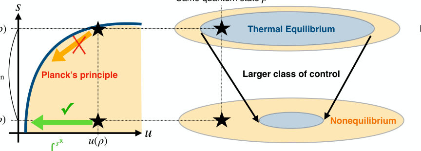
<figcaption class="paper-figure-caption"><b>Fig 1.</b> FIG. 1. Schematic of extractable work across thermodynamic levels. Consider a quantum state ρ that is in thermal equilibrium at a specific thermodynamic level (the “restricted” level), i.e., with respect to a given observational resolution and a compatible class of operations. At this level, the entropy sR(ρ) equals the thermodynamic entropy, and Planck’s principle prohibits work extraction from this state via an adiabatic cycle. With a higher observational resolution and a broader class of operations (the “enlarged” level), the same state ρ may become out of equilibrium. Consequently, the expanded class of operations may allow work to be extracted from ρ. Any such additional work is...</figcaption>
</figure>
<figure class="paper-figure-card">
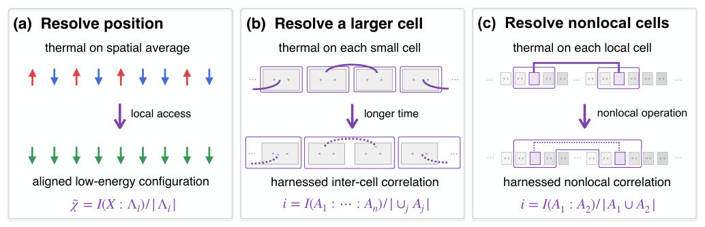
<figcaption class="paper-figure-caption"><b>Fig 2.</b> FIG. 2. Three methods to extract work by enlarging the control class. (a) A spatially varying configuration can become thermal after positional averaging, yet local access to microscopic position enables one to utilize the position-state Holevo information to extract additional work. (b) Individual small cells appear thermal, although their union need not, owing to inter-cell correlations; a longer short-range operation can resolve the larger cell to extract additional work. (c) Spatially separated cells can each be locally thermal yet jointly correlated; nonlocal control can resolve their disconnected union as a single nonlocal cell and access its total correlation to extract additional...</figcaption>
</figure>
<figure class="paper-figure-card">
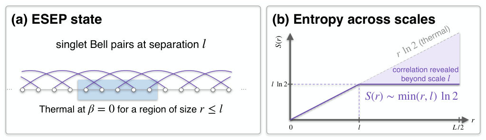
<figcaption class="paper-figure-caption"><b>Fig 3.</b> FIG. 3. Equally-separated entangled-pair (ESEP) state and its entropy landscape across varying scales. (a) A segment of |ESEPl⟩: every site belongs to a singlet Bell pair whose endpoints are separated by l sites. Any contiguous interval of length r ≤l contains no complete pair and is therefore maximally mixed, appearing thermal at β = 0. (b) The entropy of a region of length r follows the thermal value r ln 2 up to the pairing scale l and equals (l + O(1)) ln 2 for l ≤r ≤L/2. The nonlocal pair correlations give rise to the entropy difference shown in the shaded region.</figcaption>
</figure>
</div>

<p><strong>Summary.</strong> This paper develops a thermodynamic hierarchy for quantum many-body systems, showing that the amount of extractable work depends on the allowed set of operations. The key finding is that the excess work is bounded by the difference in entropy densities between the restricted and expanded operational levels. This provides a powerful, information-theoretic tool to quantify hidden work resources in quantum matter.</p>
<p><strong>Why it may be interesting.</strong> This work provides a rigorous, information-theoretic framework for quantifying non-equilibrium work extraction in quantum systems, directly linking thermodynamic potential differences to quantum information measures.</p>
<details>
<summary>Detailed structure</summary>
<p><strong>Main problem.</strong> The paper investigates the thermodynamic hierarchical structure of observables and allowed operations in isolated quantum many-body systems.</p>
<p><strong>Main result.</strong> The extractable work when enlarging the set of allowed operations is bounded by the difference between the entropy densities of the restricted and enlarged operational levels.</p>
<p><strong>Method.</strong> The authors establish quantitative bounds by relating work extraction to the difference in entropy functionals (e.g., mutual information density, Holevo information) across different operational regimes.</p>
<p><strong>Model / system.</strong> The analysis focuses on isolated quantum many-body states ($
ho$) on a lattice, considering various operational constraints such as spatial resolution, control duration, and non-local connectivity.</p>
<p><strong>Key observables.</strong> Extractable Work Density, Entropy Densities ($s_R, s_E$), Mutual-Information Density, Holevo Information, Total Correlation.</p>
<p><strong>Important parameters / regimes.</strong> Inverse temperature ($eta$), system size ($L$), spatial resolution ($l$), and the difference between entropy levels.</p>
<p><strong>Assumptions / limitations.</strong> The framework assumes cyclic operations with no heat exchange, and later sections rely on the existence of thermodynamic limits and decay properties of interaction profiles.</p>
<p><strong>Figures summary.</strong> Figure 1 schematically illustrates work extraction across thermodynamic levels, bounded by the entropy difference. Figure 2 illustrates work gain across different spatial scales, relating it to entropy differences.</p>
<p><strong>Paper structure.</strong> The paper develops the concept of a thermodynamic hierarchy, first establishing general bounds on work extraction based on entropy differences, and then applying this framework to specific physical extensions like increased spatial resolution or nonlocal connectivity.</p>
</details>
<details>
<summary>Abstract</summary>
<p>Thermodynamics is operational in the sense that the very concept of thermal equilibrium depends crucially on the choice of observables, while the amount of extractable work is defined relative to the allowed operations. Here we show that isolated quantum many-body states admit a thermodynamic hierarchical structure of observables and allowed operations, where the same state can be thermal at one level of the hierarchy and athermal at another. Enlarging the set of allowed operations therefore renders such hidden athermality a potential resource for work extraction; the resulting work gain is bounded in terms of the difference between the entropy densities of the two levels. This entropy difference takes the form of the mutual-information density. We establish the bounds for three extensions of operational access: increased spatial resolution, increased duration of control, and nonlocal connectivity, which provide access to position-state Holevo information, correlations between neighboring regions and spatially nonlocal correlations, respectively. Thus the difference between entropies at different levels of the thermodynamic hierarchy governs the bound on the work gain associated with moving to a less restricted level.</p>
</details>
<p><sub><a href="#top">↑ back to top</a></sub></p>

<p><a id="paper-2608.30363"></a></p>
<h3 id="quantum-imaginary-time-evolution-on-an-infinite-1d-chain"><a href="http://arxiv.org/abs/2608.30363v1">Quantum Imaginary Time Evolution on an Infinite 1D Chain</a></h3>
<p><strong>Authors:</strong> Hao-Ti Hung, Tung Tsao, Ying-Jer Kao<br>
<strong>Type:</strong> both · <strong>Category:</strong> quantum information and computing · <strong>PDF:</strong> <a href="https://arxiv.org/pdf/2608.30363v1">https://arxiv.org/pdf/2608.30363v1</a><br>
<strong>Analysis basis:</strong> full PDF text, analyzed in chunks
<strong>Topic relevance:</strong> <code>QC/QI experiment</code> <strong>2/5</strong> · <code>analog quantum simulation</code> <strong>2/5</strong> · <code>methods for driven-dissipative</code> <strong>2/5</strong> · <code>quantum measurements</code> <strong>1/5</strong></p>
<div class="figure-strip-hint">↔ Scroll figures horizontally</div>
<div class="paper-figures-scroll">
<figure class="paper-figure-card">
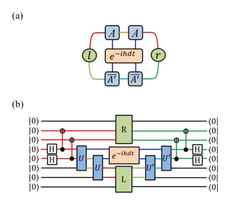
<figcaption class="paper-figure-caption"><b>Fig 1.</b> FIG. 1. Transformation of the cost function in Eq. (3) from a TN diagram to a quantum-circuit representation. Because the bra state ⟨000 · · · | cannot be directly implemented on a quantum computer, the overlap is estimated by measuring the output state.</figcaption>
</figure>
<figure class="paper-figure-card">
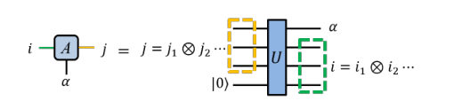
<figcaption class="paper-figure-caption"><b>Fig 2.</b> FIG. 2. The mapping between a one-site unit cell of the uMPS and a unitary gate in the quantum circuit.</figcaption>
</figure>
<figure class="paper-figure-card">
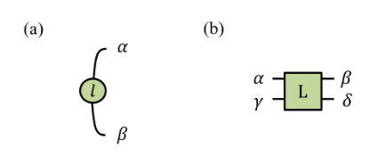
<figcaption class="paper-figure-caption"><b>Fig 3.</b> FIG. 3. (a) The left environment of the uMPS. (b) The left environ- ment of the quantum circuit.</figcaption>
</figure>
<figure class="paper-figure-card">
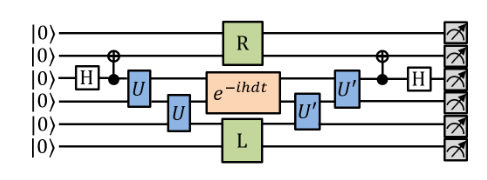
<figcaption class="paper-figure-caption"><b>Fig 4.</b> FIG. 4. Quantum-circuit representation of the cost function in Eq. (3) for bond dimension D = 2.</figcaption>
</figure>
<figure class="paper-figure-card">
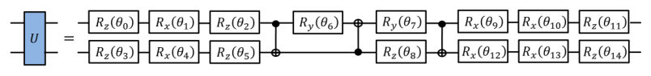
<figcaption class="paper-figure-caption"><b>Fig 5.</b> FIG. 5. Example of a PQC with virtual bond dimension D = 2. We use the ansatz provided in the GitHub repository associated with Ref. [15]. Here, Ri denotes a rotation about the i axis.</figcaption>
</figure>
</div>

<p><strong>Summary.</strong> This work introduces a quantum-circuit algorithm to simulate imaginary-time evolution on infinite 1D quantum chains, crucial for finding ground-state energies. It details using the Time-Dependent Variational Principle mapped onto quantum circuits and refines the results using the quantum Lanczos algorithm. Furthermore, the paper provides a deep statistical analysis of noise sources encountered when estimating energy via quantum measurements.</p>
<p><strong>Why it may be interesting.</strong> It provides concrete, implementable quantum algorithms for simulating ground-state properties of 1D quantum systems, directly bridging advanced quantum simulation techniques (MPS, TDVP) with NISQ hardware constraints (noise analysis).</p>
<details>
<summary>Detailed structure</summary>
<p><strong>Main problem.</strong> The paper addresses the challenge of performing imaginary-time evolution (ITE) on infinite 1D quantum lattice systems using quantum circuits.</p>
<p><strong>Main result.</strong> The quantum Lanczos algorithm provides a robust method to estimate the ground-state energy, outperforming simple unitary approximations, while statistical analysis reveals complex noise sources in optimization landscapes.</p>
<p><strong>Method.</strong> The core method adapts the Time-Dependent Variational Principle (TDVP) to map the non-unitary ITE operator onto parameterized quantum circuits (PQC) using techniques like ancilla-assisted embedding.</p>
<p><strong>Model / system.</strong> The primary physical system is an infinite 1D quantum chain, benchmarked using the transverse-field Ising model. The quantum state is represented by uniform Matrix Product States (uMPSs).</p>
<p><strong>Key observables.</strong> Ground-state energy estimate, cost function distribution, energy density distribution, and the ratio of parameter variance to shot noise variance.</p>
<p><strong>Important parameters / regimes.</strong> Bond dimension (D=2), number of shots ($N_{	ext{shots}}$), and the time step ($   au$).</p>
<p><strong>Assumptions / limitations.</strong> The method assumes translational invariance (uMPS ansatz) and relies on approximations for the non-unitary evolution operator (e.g., unitary embedding or unitary approximation).</p>
<p><strong>Figures summary.</strong> Figures illustrate the mapping of cost functions to quantum circuits, compare energy estimates from different methods (QLanczos vs. QITE), and show the statistical comparison of energy fluctuations against theoretical distributions.</p>
<p><strong>Paper structure.</strong> The paper first reviews TDVP for real-time evolution, then details the quantum-circuit TDVP framework for ITE on infinite systems, followed by detailed analyses of energy estimation refinement using QLanczos and statistical characterization of noise in optimization landscapes.</p>
</details>
<details>
<summary>Abstract</summary>
<p>We introduce a quantum-circuit algorithm for performing imaginary-time evolution on infinite one-dimensional lattice systems. The method uses a parameterized quantum circuit to represent a uniform matrix product state ansatz. We derive the ITE algorithm using the time-dependent variational principle and employ the quantum Lanczos algorithm to improve the ground-state energy estimate. As a benchmark, we simulate the transverse-field Ising model using both classical simulators and IBM Quantum devices. Our analysis includes a statistical study of the distributions of the cost function and energy density obtained from quantum measurements, illustrating the effects of finite-sampling noise on convergence.</p>
</details>
<p><sub><a href="#top">↑ back to top</a></sub></p>

<p><a id="paper-2608.30670"></a></p>
<h3 id="active-brownian-dynamics-from-a-hamiltonian-model-transitioning-from-equilibrium-to-activity"><a href="http://arxiv.org/abs/2608.30670v1">Active Brownian Dynamics from a Hamiltonian Model: Transitioning from Equilibrium to Activity</a></h3>
<p><strong>Authors:</strong> Antik Bhattacharya, Smarajit Karmakar, Jürgen Horbach<br>
<strong>Type:</strong> theory · <strong>Category:</strong> statistical mechanics · <strong>PDF:</strong> <a href="https://arxiv.org/pdf/2608.30670v1">https://arxiv.org/pdf/2608.30670v1</a><br>
<strong>Analysis basis:</strong> full PDF text, analyzed in chunks
<strong>Topic relevance:</strong> <code>non-equilibrium universality</code> <strong>2/5</strong> · <code>Keldysh / 2PI / non-Gaussian methods</code> <strong>1/5</strong> · <code>correlated / nonlocal dissipation</code> <strong>1/5</strong> · <code>driven-dissipative phase transition</code> <strong>1/5</strong> · <code>methods for driven-dissipative</code> <strong>1/5</strong></p>
<div class="figure-strip-hint">↔ Scroll figures horizontally</div>
<div class="paper-figures-scroll">
<figure class="paper-figure-card">
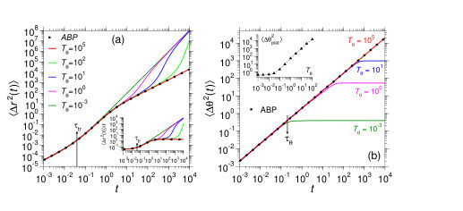
<figcaption class="paper-figure-caption"><b>Fig 1.</b> FIG. 1. (a) Translational MSD, ⟨∆⃗r 2(t)⟩, for the HABP model for Dtr = 0.01 (with Ttr = 10−3 fixed) and Dθ = 1.0, varying Tθ from 10−3 to 105 (see text). The black dotted line is the corresponding ABP result for Dtr = 0.01, Dθ = 1.0, and v0 = 1.0. The inset shows the same data but now ⟨∆⃗r 2(t)⟩/t is plotted as function of time. (b) Same as a), but now for the ro- tational MSD, ⟨∆θ2(t)⟩. The inset shows the plateau height ⟨∆θ2 plat⟩as a function of Tθ.</figcaption>
</figure>
<figure class="paper-figure-card">
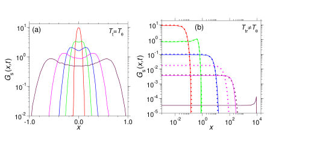
<figcaption class="paper-figure-caption"><b>Fig 2.</b> FIG. 2. (a) Van Hove correlation, Gs(x, t), for Ttr = Tθ = 10−3 (equilibrium) and the times t = 0.036, 0.115, 0.205, 0.365, and 0.652 (using the color gradient from red to brown with increasing time). (b) Gs(x, t) for Ttr = 10−3 and Tθ = 102 at times t = 0.038, 0.483, 15.0, 483.33, and 10000.0 (keeping Dtr = 0.01 and Dθ = 1.0). The dotted lines are the corresponding ABP results, in quantitative agreement with HABP up to t = 15.0.</figcaption>
</figure>
<figure class="paper-figure-card">
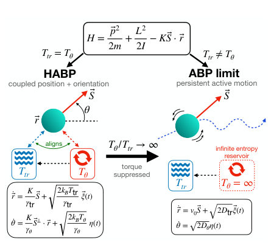
<figcaption class="paper-figure-caption"><b>Fig 3.</b> FIG. 4. Schematic illustration of the transition from equilibrium to active dynamics in the HABP model.</figcaption>
</figure>
<figure class="paper-figure-card">
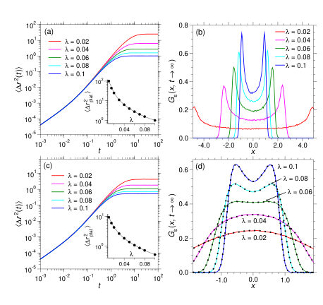
<figcaption class="paper-figure-caption"><b>Fig 4.</b> FIG. 3. HABP/ABP in a harmonic potential. (a) MSD, ⟨∆⃗r 2(t)⟩, for the equilibrium HABP (Tθ = Ttr = 10−3) at various trap strengths 0.02 ≤λ ≤0.1. In- set: Plateau value ⟨∆r 2 plat⟩versus λ; the solid line shows the analytical prediction. (b) Stationary van Hove correlation function Gs(x, t →∞) for the states in (a). (c) MSD for the non-equilibrium case (Tθ = 105 &gt; Ttr = 10−3) across the same range of λ. In- set: ⟨∆r 2 plat⟩versus λ (filled circles) compared to the analytical prediction (solid line; see text). (d) Cor- responding stationary van Hove correlation function Gs(x, t →∞) for the states in (c). Dotted black lines indicate the ABP model.</figcaption>
</figure>
</div>

<p><strong>Summary.</strong> This paper introduces the Hamiltonian Active Brownian Particle (HABP) model to provide a first-principles, equilibrium-inspired description of active matter. By coupling translational and rotational motion to separate heat baths, the model naturally transitions from equilibrium dynamics to non-equilibrium active states. The key achievement is quantifying activity through the entropy production rate and showing quantitative agreement with standard ABP models in the appropriate limits.</p>
<p><strong>Why it may be interesting.</strong> This work provides a rigorous, Hamiltonian-based foundation for active matter, moving beyond purely phenomenological models by deriving activity from explicit thermodynamic asymmetries between coupled baths.</p>
<details>
<summary>Detailed structure</summary>
<p><strong>Main problem.</strong> The paper aims to develop an equilibrium-inspired theoretical framework to describe the non-equilibrium dynamics of active matter, specifically bridging the gap between standard Active Brownian Particles (ABPs) and an underlying Hamiltonian description.</p>
<p><strong>Main result.</strong> The Hamiltonian Active Brownian Particle (HABP) model successfully reproduces the non-equilibrium behavior of ABPs when the translational and rotational baths are coupled with different temperatures, quantifying activity via entropy production.</p>
<p><strong>Method.</strong> The authors use overdamped Langevin equations derived from a Hamiltonian that couples translational and rotational degrees of freedom to separate heat baths, analyzing Mean Squared Displacements (MSDs) and entropy production rates.</p>
<p><strong>Model / system.</strong> The system is modeled by the Hamiltonian Active Brownian Particle (HABP) model, which includes position ($\vec{r}$), momentum ($\vec{p}$), and spin orientation ($\vec{S}$). The dynamics are governed by coupling to two baths at potentially different temperatures ($T_{tr}$ and $T_{	heta}$).</p>
<p><strong>Key observables.</strong> Mean Squared Displacements (MSDs) for both translational and rotational motion, and the steady-state entropy production rate ($\dot{\sigma}$).</p>
<p><strong>Important parameters / regimes.</strong> The temperature ratio ($T_{	heta}/T_{tr}$), the coupling constant ($K$), the trap strength ($\lambda$), and the damping coefficients ($\gamma_{tr}, \gamma_{	heta}$).</p>
<p><strong>Assumptions / limitations.</strong> The analysis relies on deriving Langevin equations from a Hamiltonian and making approximations in the non-equilibrium limit, such as assuming rotational dynamics are noise-dominated for calculating $\langle\vec{S} \cdot \vec{r}
angle$.</p>
<p><strong>Figures summary.</strong> Figures illustrate the MSDs for HABP vs. ABP across varying rotational temperatures, showing crossovers from diffusive to ballistic regimes. Other figures plot Van Hove correlation functions and analyze MSDs in a harmonic potential.</p>
<p><strong>Paper structure.</strong> The paper first establishes the HABP model and its equilibrium properties, showing agreement with fluctuation-dissipation theorems. It then analyzes the non-equilibrium limit by setting $T_{ heta} 
eq T_{tr}$, demonstrating the emergence of activity and calculating the resulting entropy production. Finally, it extends the framework to interacting particles in a harmonic trap to study collective effects.</p>
</details>
<details>
<summary>Abstract</summary>
<p>We introduce a Hamiltonian Active Brownian Particle (HABP) model that connects equilibrium dynamics with the non-equilibrium, two-dimensional overdamped behavior of standard Active Brownian Particles (ABPs). In equilibrium, the system follows overdamped Langevin equations that strictly satisfy the fluctuation-dissipation theorem. Coupling translational and rotational degrees of freedom to separate heat baths ($T_θ > T_{\textrm{tr}}$), drives the system out of equilibrium. In free space, matching the diffusion coefficients yields quantitative agreement with the ABP model in the limit $T_θ/T_{\textrm{tr}}\to \infty$, whereas in a harmonic potential, this matching is recovered even at finite temperature ratios. Entropy production analysis demonstrates that in the ABP limit, all energy injected by the swim force dissipates into the translational bath, leaving the rotational bath as a zero-cost entropy source. These insights provide the first steps toward equilibrium-inspired descriptions of active matter, facilitating the development of new theoretical frameworks to study activity-induced fluctuations, transport, and phase behavior in living and non-living soft matter systems far from equilibrium.</p>
</details>
<p><sub><a href="#top">↑ back to top</a></sub></p>

<p><a id="paper-2608.31090"></a></p>
<h3 id="rotating-wave-approximation-for-spin-boson-models-with-structured-fields"><a href="http://arxiv.org/abs/2608.31090v1">Rotating-wave approximation for spin-boson models with structured fields</a></h3>
<p><strong>Authors:</strong> Aitor Balmaseda, Davide Lonigro, Juan Manuel Pérez-Pardo<br>
<strong>Type:</strong> theory · <strong>Category:</strong> other · <strong>PDF:</strong> <a href="https://arxiv.org/pdf/2608.31090v1">https://arxiv.org/pdf/2608.31090v1</a><br>
<strong>Analysis basis:</strong> full PDF text, analyzed in chunks
<strong>Topic relevance:</strong> <code>Keldysh / 2PI / non-Gaussian methods</code> <strong>2/5</strong> · <code>methods for driven-dissipative</code> <strong>2/5</strong> · <code>Tavis-Cummings &amp; cavity-many-emitter</code> <strong>1/5</strong> · <code>correlated / nonlocal dissipation</code> <strong>1/5</strong></p>
<div class="figure-strip-hint">↔ Scroll figures horizontally</div>
<div class="paper-figures-scroll">
<figure class="paper-figure-card">
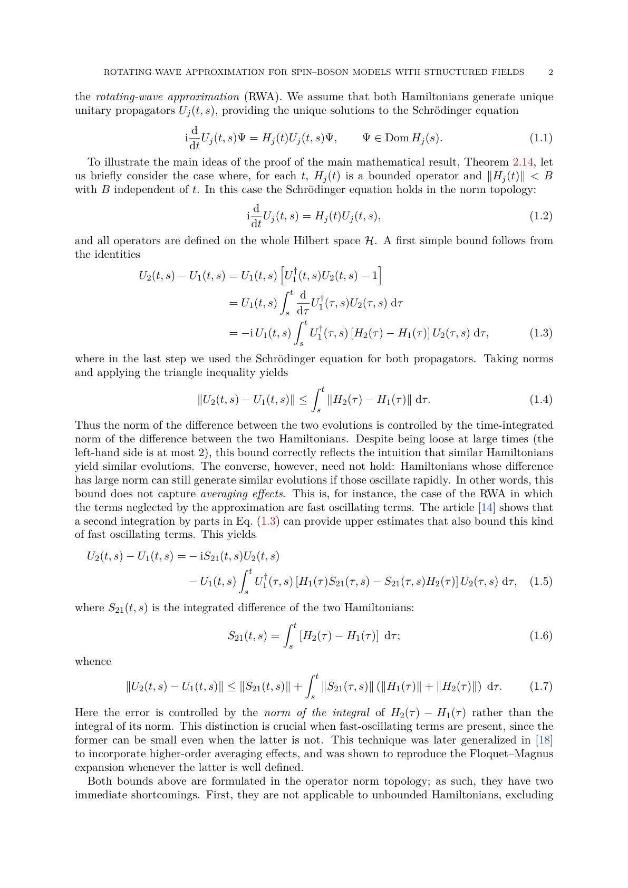
<figcaption class="paper-figure-caption"><b>Fig 1.</b> Low-resolution page preview, page 2</figcaption>
</figure>
<figure class="paper-figure-card">
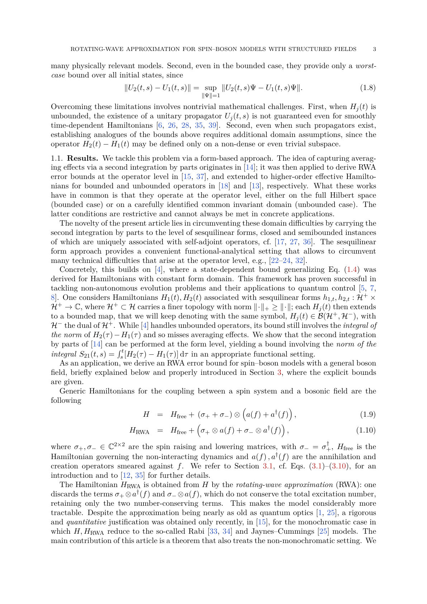
<figcaption class="paper-figure-caption"><b>Fig 2.</b> Low-resolution page preview, page 3</figcaption>
</figure>
<figure class="paper-figure-card">
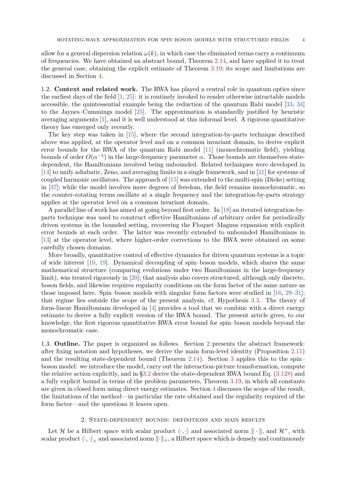
<figcaption class="paper-figure-caption"><b>Fig 3.</b> Low-resolution page preview, page 4</figcaption>
</figure>
<figure class="paper-figure-card">
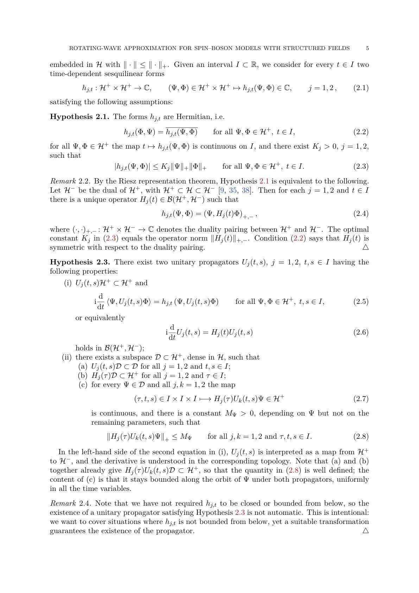
<figcaption class="paper-figure-caption"><b>Fig 4.</b> Low-resolution page preview, page 5</figcaption>
</figure>
<figure class="paper-figure-card">
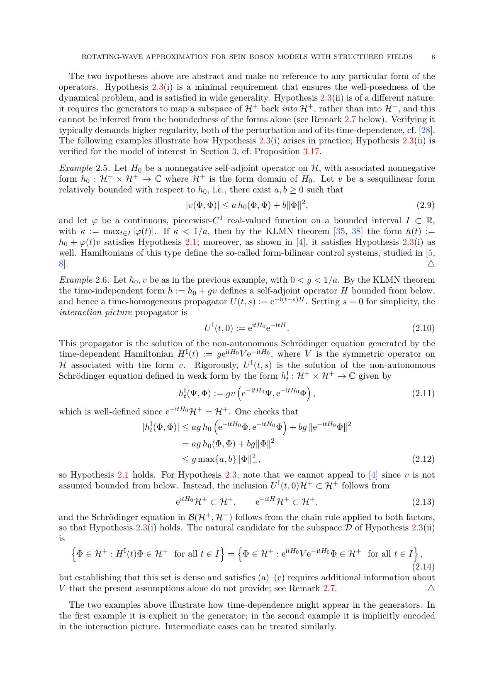
<figcaption class="paper-figure-caption"><b>Fig 5.</b> Low-resolution page preview, page 6</figcaption>
</figure>
</div>

<p><strong>Summary.</strong> This paper develops rigorous mathematical techniques to bound the error incurred when using the Rotating-Wave Approximation (RWA) in spin-boson models. By employing advanced analysis on sesquilinear forms, the authors derive an explicit error bound that confirms the RWA's accuracy in the high-frequency limit. This provides a powerful theoretical tool for analyzing quantum dynamics in structured environments.</p>
<p><strong>Why it may be interesting.</strong> This work provides a rigorous, quantitative framework for analyzing approximations like the RWA, which is fundamental in quantum optics and open quantum systems, especially when dealing with complex, structured environments.</p>
<details>
<summary>Detailed structure</summary>
<p><strong>Main problem.</strong> The paper rigorously derives quantitative, state-dependent error bounds for the Rotating-Wave Approximation (RWA) when applied to spin-boson models with structured boson fields.</p>
<p><strong>Main result.</strong> It establishes an explicit error bound showing the RWA error vanishes as $O(\alpha^{-1})$ in the large-frequency limit, confirming the approximation's accuracy under specific mathematical conditions.</p>
<p><strong>Method.</strong> The core method involves developing advanced mathematical tools, specifically using a second integration by parts at the level of sesquilinear forms, to control the difference between two quantum evolutions generated by different Hamiltonians.</p>
<p><strong>Model / system.</strong> The system analyzed is the spin-boson model, which describes the interaction between a two-level quantum system (spin) and a bosonic field. The Hamiltonian comparison is between the full model and its RWA counterpart.</p>
<p><strong>Key observables.</strong> The primary observable is the difference between the unitary propagators, $\lVert U_{	ext{RWA}}(t, s) - U(t, s) 
Vert$, quantified by explicit error bounds.</p>
<p><strong>Important parameters / regimes.</strong> The analysis is sensitive to the large-frequency parameter ($\alpha$) and the structure of the boson field, characterized by its form factor and dispersion relation.</p>
<p><strong>Assumptions / limitations.</strong> The derivation relies on advanced functional analysis, including the ability to perform integration by parts on sesquilinear forms and assuming the initial state lies in sufficiently high-regularity domains.</p>
<p><strong>Paper structure.</strong> The paper progresses from establishing general mathematical tools for bounding differences between quantum evolutions (using sesquilinear forms) to applying these tools specifically to derive the quantitative RWA error bound for the spin-boson model.</p>
</details>
<details>
<summary>Abstract</summary>
<p>We derive state-dependent bounds on the difference between two quantum evolutions generated by unbounded Hamiltonians sharing a common form domain. The main technical tool is a second integration by parts, performed at the level of sesquilinear forms rather than at the operator level, which removes the need for a common invariant operator domain. The resulting estimate involves the norm of the time-integrated difference of the two generators, rather than the integral of its norm, and is therefore sensitive to the averaging effects produced by fast-oscillating terms. As an application we prove a quantitative bound on the rotating-wave approximation for spin-boson models with a structured boson field, described by an arbitrary massive dispersion relation on a general measure space and by a suitable class of form factors. The proof involves a careful analysis of the high-frequency scaling. The bound holds on a dense subspace of states, is fully explicit, and all the constants entering it depend only on the parameters of the model and not on the frequency scale, so that the approximation becomes exact in the limit of large frequency.</p>
</details>
<p><sub><a href="#top">↑ back to top</a></sub></p>

<p><a id="paper-2608.28739"></a></p>
<h3 id="fractal-confinement-and-magnetic-self-sabotage-of-current-flow-electrons-near-the-metal-insulator-crossover-in-a-2d-math831math-layer"><a href="http://arxiv.org/abs/2608.28739v1">Fractal Confinement and Magnetic Self-sabotage of Current Flow: Electrons Near the Metal-insulator Crossover in a 2D $δ$-layer</a></h3>
<p><strong>Authors:</strong> Xinghai Zhang, Matthew S. Foster, Markus Mueller<br>
<strong>Type:</strong> theory · <strong>Category:</strong> disordered systems and neural networks · <strong>PDF:</strong> <a href="https://arxiv.org/pdf/2608.28739v1">https://arxiv.org/pdf/2608.28739v1</a><br>
<strong>Analysis basis:</strong> full PDF text, analyzed in chunks
<strong>Topic relevance:</strong> <code>Keldysh / 2PI / non-Gaussian methods</code> <strong>2/5</strong> · <code>analog quantum simulation</code> <strong>2/5</strong></p>
<div class="figure-strip-hint">↔ Scroll figures horizontally</div>
<div class="paper-figures-scroll">
<figure class="paper-figure-card">
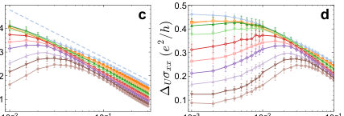
<figcaption class="paper-figure-caption"><b>Fig 1.</b> FIG. 1. Longitudinal conductivity σxx in distorted triangular lattices with average lattice constant R. (a) T-dependence. (b) σxx scaled by its T = 0 limit. (c) The difference be- tween interacting and non-interacting systems, ∆Uσxx(T) ≡ σxx(U0, T) −σxx(U = 0, T), displays a predominant antilo- calizing spin-triplet Altshuler-Aronov correction [−log(T)] at high T. (d) At lower T, ∆Uσxx(T) adopts a localizing log(T) trend, most prominently for lower densities (larger R), imply- ing the dominance of the repulsive spin-singlet channel. The saturation for the lowest temperatures is a finite-size effect. At T = 0, the local magnetic moments break both spin SU(2) and time-reversal symmetries, so...</figcaption>
</figure>
<figure class="paper-figure-card">
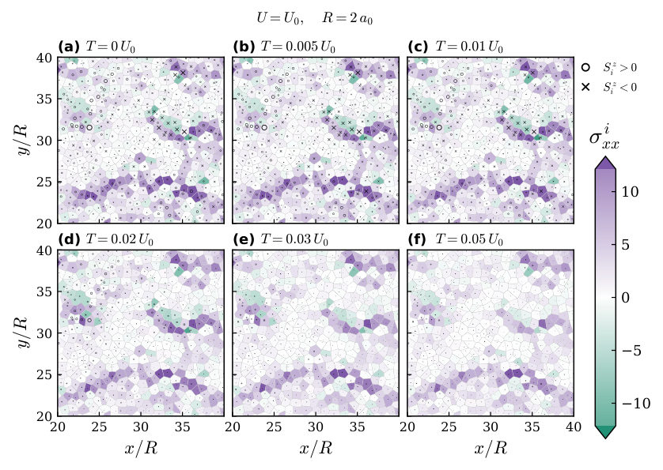
<figcaption class="paper-figure-caption"><b>Fig 2.</b> FIG. 2. The local conductivity and local moments of a representative 20 × 20 sub-area of a critically dense (R = 2a0) sample of size 100×100, at different temperatures. The local longitudinal conductivity is represented by the filling color in the Wigner-Seitz cell surrounding a site, while the magnitude of the local moments is indicated by the size (area proportional to |Sz i |) of the circle (spin up) or cross (spin down). Note the strong correlation between strong current flow and large polarization at low T.</figcaption>
</figure>
<figure class="paper-figure-card">
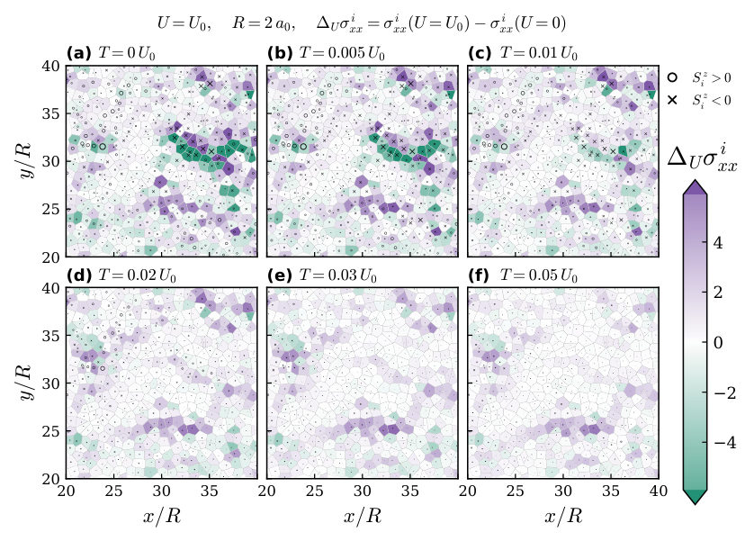
<figcaption class="paper-figure-caption"><b>Fig 3.</b> FIG. 3. Local moments and the interaction-induced difference in local conductivity (as compared to a non-interacting system) in the same spatial region of the same sample as shown in Fig. 2.</figcaption>
</figure>
<figure class="paper-figure-card">
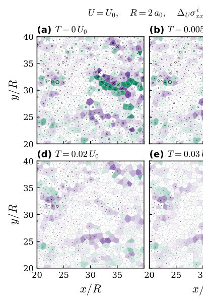
<figcaption class="paper-figure-caption"><b>Fig 4.</b> Fig. 2 shows the formation of local magnetic moments alongside the evolution of σi αβ as the temperature is low- ered in systems with R = 2a0. At high T = 0.05U0 [Fig. 2(f)], there are no magnetic moments. The local conductivity is inhomogeneous because of the random dopant positions and concomitant modulated hopping. As T decreases [Figs. 2(c)–(e)], local moments form in regions where the current flow tends to be particularly strong. This is accompanied by a significant change of σi αβ in their vicinity. At very low T [Fig. 2(a) and (b)], the local moments form ferromagnetically correlated clusters, as expected from crossing a local Stoner instability. Not only is the magnitude of σi αβ...</figcaption>
</figure>
<figure class="paper-figure-card">
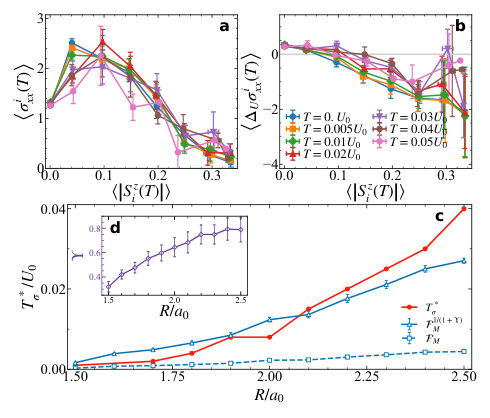
<figcaption class="paper-figure-caption"><b>Fig 5.</b> FIG. 4. Correlation between local conductivity and local moments. σi xx and the interaction corrections to the local con- ductivity, ∆Uσi xx = σi xx(U = U0) −σi xx(U = 0), are averaged for sites with similar local moments. (a): Local conductivity [Eq. (4)] at T vs. local moment measured. (b): Interaction- induced corrections vs. magnetic moment. The curves in (a) and (b) display a nearly T-independent correlation. (c): The temperature T ∗ σ where the conductivity peaks, the fractal- enhanced spin-flip scattering rate [Eq. (6)], and the naive rate estimate 1/(τsU0) ∼FM vs. the average distance be- tween dopant atoms. The inset shows the Chalker exponent Υ = 1 −d2/2 with d2 the second...</figcaption>
</figure>
</div>

<p><strong>Summary.</strong> This theoretical study models electron transport in 2D doped semiconductors near a metal-insulator transition. Using Hartree-Fock theory, the authors show that as temperature drops, the system initially conducts well but then enters an insulating state. This localization is driven by the spontaneous formation of local magnetic moments that scatter conduction electrons, effectively choking off the current flow.</p>
<p><strong>Why it may be interesting.</strong> The mechanism of 'magnetic self-sabotage'—where electronic correlations drive localization—is a rich topic relevant to understanding disordered quantum materials and many-body localization phenomena.</p>
<details>
<summary>Detailed structure</summary>
<p><strong>Main problem.</strong> The study investigates low-temperature transport and itinerant magnetism in 2D delta-doped semiconductors near the metal-insulator crossover.</p>
<p><strong>Main result.</strong> The system exhibits a transition where initial conductivity enhancement is overcome by the formation of local magnetic moments, leading to an insulating downturn via spin-flip scattering.</p>
<p><strong>Method.</strong> The analysis employs large-scale Hartree-Fock mean-field calculations combined with the Kubo-Greenwood formula to evaluate conductivity.</p>
<p><strong>Model / system.</strong> The model is a 2D delta-doped semiconductor system described by a tight-binding Hamiltonian with onsite repulsion U0, simulating random dopant placement on a lattice.</p>
<p><strong>Key observables.</strong> Longitudinal conductivity $\sigma(T)$, local magnetization $\langle|S_z^i|
angle$, and the interaction-induced correction to conductivity $\Delta U\sigma_{xx}(T)$.</p>
<p><strong>Important parameters / regimes.</strong> The critical parameter is the dopant density (related to lattice constant R), and key energy scales are the onsite repulsion $U_0$ and hopping strength $t_{typ}$.</p>
<p><strong>Assumptions / limitations.</strong> The primary approximations include the Hartree-Fock mean-field ansatz and the assumption that local moments align along a preferred axis (z-axis).</p>
<p><strong>Figures summary.</strong> Figures illustrate the crossover of $\sigma_{xx}$ vs. $T$ showing the downturn correlated with moment formation, and local maps showing the spatial correlation between strong current flow and large local polarization.</p>
<p><strong>Paper structure.</strong> The paper builds by first establishing the transport framework using HF calculations, then detailing the temperature dependence of conductivity, and finally linking the insulating downturn directly to the onset and dynamics of local magnetic moments.</p>
</details>
<details>
<summary>Abstract</summary>
<p>We study low-$T$ transport and itinerant magnetism in 2D $δ$-doped semiconductors. Large-scale Hartree-Fock calculations with random hoppings and repulsion $U_0$ reveal two transport regimes near a critical density. The conductivity $σ(T)$ initially increases as $T$ drops below $U_0 / 10$. However, at $T \sim U_0/100$, a tiny density of magnetic moments forms, driving an insulating downturn. Fractal wavefunctions locally amplify magnetic interactions, initially concentrating currents into branched filaments, but ultimately choking them off via dynamic SU(2) symmetry breaking.</p>
</details>
<p><sub><a href="#top">↑ back to top</a></sub></p>

<p><a id="paper-2608.29874"></a></p>
<h3 id="homogeneous-attractive-bose-einstein-condensates-with-repulsive-three-body-interactions-the-one-dimensional-case"><a href="http://arxiv.org/abs/2608.29874v1">Homogeneous attractive Bose-Einstein condensates with repulsive three-body interactions: the one-dimensional case</a></h3>
<p><strong>Authors:</strong> Dinh-Thi Nguyen<br>
<strong>Type:</strong> theory · <strong>Category:</strong> quantum gases · <strong>PDF:</strong> <a href="https://arxiv.org/pdf/2608.29874v1">https://arxiv.org/pdf/2608.29874v1</a><br>
<strong>Analysis basis:</strong> full PDF text, analyzed in chunks
<strong>Topic relevance:</strong> <code>Keldysh / 2PI / non-Gaussian methods</code> <strong>2/5</strong> · <code>analog quantum simulation</code> <strong>2/5</strong></p>
<div class="figure-strip-hint">↔ Scroll figures horizontally</div>
<div class="paper-figures-scroll">
<figure class="paper-figure-card">
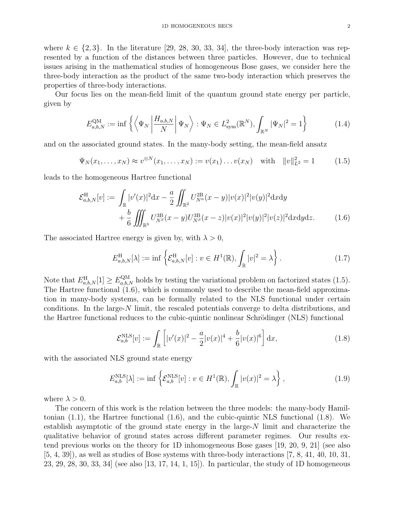
<figcaption class="paper-figure-caption"><b>Fig 1.</b> Low-resolution page preview, page 2</figcaption>
</figure>
<figure class="paper-figure-card">
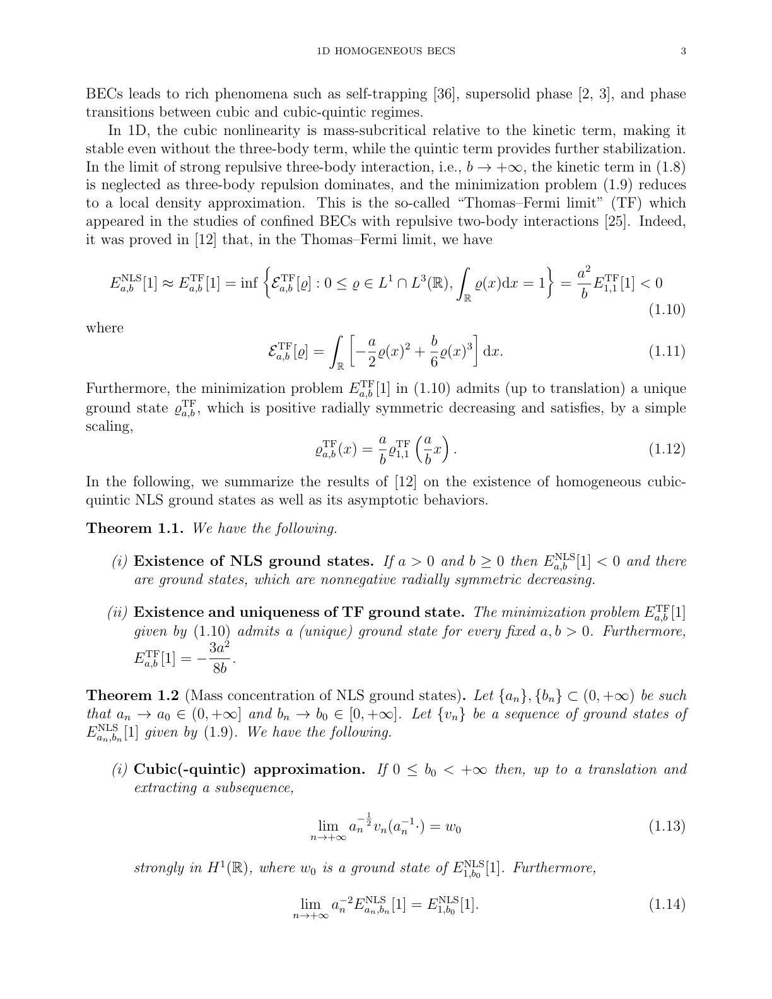
<figcaption class="paper-figure-caption"><b>Fig 2.</b> Low-resolution page preview, page 3</figcaption>
</figure>
<figure class="paper-figure-card">
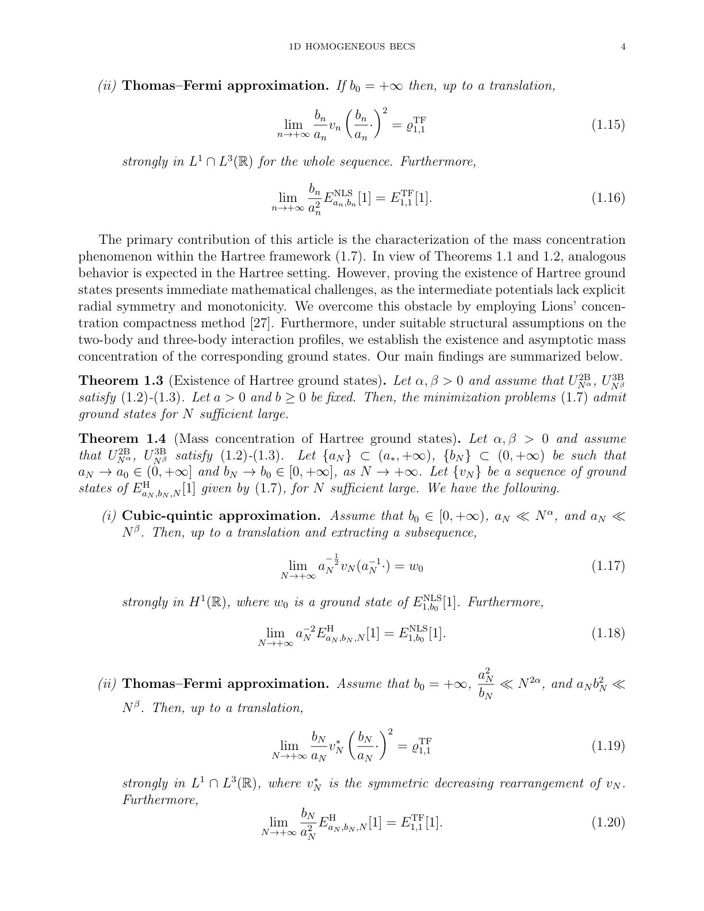
<figcaption class="paper-figure-caption"><b>Fig 3.</b> Low-resolution page preview, page 4</figcaption>
</figure>
<figure class="paper-figure-card">

<figcaption class="paper-figure-caption"><b>Fig 4.</b> Low-resolution page preview, page 5</figcaption>
</figure>
<figure class="paper-figure-card">

<figcaption class="paper-figure-caption"><b>Fig 5.</b> Low-resolution page preview, page 6</figcaption>
</figure>
</div>

<p><strong>Summary.</strong> This theoretical paper analyzes the ground state of a 1D Bose gas with competing attractive two-body and repulsive three-body interactions. By employing advanced techniques like intermediate Hartree theory and Onsager inequalities, the authors rigorously prove that the quantum energy converges to a mean-field limit described by a cubic-quintic nonlinear Schrödinger equation. This establishes a powerful mathematical framework for understanding complex many-body quantum systems.</p>
<p><strong>Why it may be interesting.</strong> This work provides rigorous mathematical tools to analyze the stability and ground state structure of interacting quantum gases, particularly when higher-order (three-body) interactions are present, which is crucial for understanding real-world BEC experiments.</p>
<details>
<summary>Detailed structure</summary>
<p><strong>Main problem.</strong> The paper investigates the ground-state properties of a one-dimensional homogeneous Bose gas subjected to competing attractive two-body and repulsive three-body interactions.</p>
<p><strong>Main result.</strong> The quantum ground state energy per particle is shown to converge to the mean-field limit described by the cubic-quintic nonlinear Schrödinger functional in the large-N limit.</p>
<p><strong>Method.</strong> The analysis employs intermediate Hartree theory and utilizes Onsager-type inequalities to bridge the gap between the full many-body Hamiltonian and the mean-field functional.</p>
<p><strong>Model / system.</strong> The system is a homogeneous Bose gas of N identical bosons in 1D, governed by a Hamiltonian containing both two-body (attractive) and three-body (repulsive) interaction terms.</p>
<p><strong>Key observables.</strong> Ground state energy per particle ($E_{QM}$), density profile ($
ho_N$), and the resulting mean-field energy functionals ($E_{NLS}$, $E_{TF}$).</p>
<p><strong>Important parameters / regimes.</strong> Interaction strengths ($a$ for two-body, $b$ for three-body), particle number ($N$), and scaling parameters defining the limiting regimes (e.g., $b_N 	o b_0$ or $b_N 	o +\infty$).</p>
<p><strong>Assumptions / limitations.</strong> The derivation relies on the intermediate Hartree approximation and the use of Onsager-type inequalities, which are necessary because the system is unconfined and translationally invariant.</p>
<p><strong>Paper structure.</strong> The paper progresses by first deriving the mean-field limit (cubic-quintic NLS functional) from the many-body Hamiltonian using Hartree theory. It then rigorously proves the convergence of the quantum ground state energy to this mean-field limit, analyzing both the general cubic-quintic regime and the Thomas-Fermi limit separately.</p>
</details>
<details>
<summary>Abstract</summary>
<p>We investigate the behavior of a homogeneous one-dimensional Bose gas composed of $N$ identical bosons experiencing attractive two-body and repulsive three-body interactions. Utilizing intermediate Hartree theory, we rigorously derive the homogeneous cubic-quintic nonlinear Schrödinger functional as the mean-field limit of the many-body Hamiltonian. Particular attention is given to the impact of the repulsive three-body term on ground state energy estimates and mass concentration properties</p>
</details>
<p><sub><a href="#top">↑ back to top</a></sub></p>

<p><a id="paper-2608.30008"></a></p>
<h3 id="local-connectivity-balance-shapes-population-dynamics-in-random-recurrent-networks"><a href="http://arxiv.org/abs/2608.30008v1">Local connectivity balance shapes population dynamics in random recurrent networks</a></h3>
<p><strong>Authors:</strong> Shotaro Takasu, Richard Gast, Ann Kennedy<br>
<strong>Type:</strong> theory · <strong>Category:</strong> disordered systems and neural networks · <strong>PDF:</strong> <a href="https://arxiv.org/pdf/2608.30008v1">https://arxiv.org/pdf/2608.30008v1</a><br>
<strong>Analysis basis:</strong> full PDF text, analyzed in chunks
<strong>Topic relevance:</strong> <code>Keldysh / 2PI / non-Gaussian methods</code> <strong>2/5</strong> · <code>methods for driven-dissipative</code> <strong>2/5</strong></p>
<div class="figure-strip-hint">↔ Scroll figures horizontally</div>
<div class="paper-figures-scroll">
<figure class="paper-figure-card">

<figcaption class="paper-figure-caption"><b>Fig 1.</b> FIG. 1. Numerical simulations illustrating how local connectivity balance affects network dynamics. (a) Schematic of the random recurrent network model with local connectivity balance. (b,c) Fraction of stable (non-divergent) dynamics, P(stable), for the ReLU function and the supra-linearly scaling function, respectively. For each parameter value, we simulate 50 networks with independent realizations of J and compute the fraction that converge to a fixed point. We use g = 1.0 in (c), and a simulation length of T = 1000. (d,e) Activities of 10 representative units for the sigmoid (d) and sub-linear (e) networks, at µ = 0 (top) and µ = 1 (middle). The bottom panels show the numerically...</figcaption>
</figure>
<figure class="paper-figure-card">

<figcaption class="paper-figure-caption"><b>Fig 2.</b> FIG. 2. Phase diagrams with analytically derived transition boundaries. (a,b) Phase diagrams for the sigmoid and sub- linear networks. The color scale represents the maximum Lyapunov exponent (MLE), averaged over 10 network real- izations, and the red curves indicate the analytically derived critical connectivity strength gc. (c) Phase diagram for the ReLU network. The color scale represents the fraction of sta- ble realizations among 50 network realizations, and the red curve indicates gc. The network size is N = 3000 in all pan- els.</figcaption>
</figure>
<figure class="paper-figure-card">

<figcaption class="paper-figure-caption"><b>Fig 3.</b> FIG. 3. Participation ratio PRa (a ∈{x, ϕ}, for the pre- activation x and the activation ϕ) for (a) sigmoid and (b) sub-linear networks, shown for two values of g each. Lines and shading indicate the mean and std over 10 network re- alizations. Network size is N = 3000 and simulation time is T = 105.</figcaption>
</figure>
</div>

<p><strong>Summary.</strong> This theoretical paper analyzes how local connectivity balance ($\mu$) controls the collective dynamics of random recurrent neural networks. It shows that $\mu$ acts as a switch: stabilizing dynamics for certain nonlinearities while inducing chaos for others. The work establishes $\mu$ as a crucial, previously overlooked control parameter for understanding complex disordered systems.</p>
<p><strong>Why it may be interesting.</strong> The findings establish a deep connection between structural constraints (local balance) and dynamical stability, providing a general framework applicable to complex, non-equilibrium dynamics found in many-body physics.</p>
<details>
<summary>Detailed structure</summary>
<p><strong>Main problem.</strong> The study investigates how the statistical structure of connectivity, specifically 'local connectivity balance,' shapes the collective dynamics of disordered recurrent networks.</p>
<p><strong>Main result.</strong> Local connectivity balance acts as a critical control parameter: it stabilizes dynamics for linear/supra-linear nonlinearities but drives the network into chaos for sub-linear/saturating ones.</p>
<p><strong>Method.</strong> The analysis employs analytical techniques, including the path-integral formalism, saddle-point approximation, and dynamical mean-field theory (DMFT) in the limit N -&gt; infinity.</p>
<p><strong>Model / system.</strong> The model is a randomly connected recurrent network governed by a differential equation involving a unit nonlinearity $\phi(x)$. The key structural element is the local connectivity balance parameter $\mu$.</p>
<p><strong>Key observables.</strong> Network state divergence, stability (fixed point vs. chaos), Maximum Lyapunov Exponent (MLE), and the effective dimension (Participation Ratio).</p>
<p><strong>Important parameters / regimes.</strong> Local connectivity balance parameter ($\mu$), the single-unit nonlinearity ($\phi(x)$), and the coupling strength ($g$).</p>
<p><strong>Assumptions / limitations.</strong> The analysis relies on the saddle-point approximation in the limit N -&gt; infinity, and previous work often incorrectly assumed the activation function must be odd.</p>
<p><strong>Figures summary.</strong> Figures illustrate the effect of $\mu$ on stability (e.g., ReLU vs. Sigmoid), show MLE changes, and map out phase diagrams showing critical coupling strengths ($g_c$) dependent on $\mu$.</p>
<p><strong>Paper structure.</strong> The paper builds from defining the system and the role of $\mu$, deriving the generating functional via path integrals, applying the saddle-point approximation to find order parameters, and finally analyzing the resulting mean-field equations to determine stability regimes based on the nonlinearity type.</p>
</details>
<details>
<summary>Abstract</summary>
<p>Disordered dynamical systems comprising many interacting units, from ecological communities to neural circuits, are ubiquitous, and understanding how connectivity shapes their collective behavior is a central theoretical challenge. One long-recognized feature of neural circuits is local connectivity balance, in which the excitatory and inhibitory weights converging onto each unit approximately cancel. Although local connectivity balance has been proposed to serve functions such as gating incoming signals, its effect on collective network dynamics remains unclear. Here we analytically study randomly connected recurrent networks with varying degrees of local connectivity balance. We show that this balance leaves the connectivity spectrum unchanged yet drastically reshapes the dynamics in a manner that depends critically on the single-unit nonlinearity. Local balance suppresses unbounded growth of the network state and stabilizes network dynamics when the activation function scales linearly or faster, whereas it drives the network into chaos when the activation function is sub-linear or saturating. Importantly, these effects vanish for odd activation functions, which are commonly assumed in previous work. We further find that, for saturating nonlinearities, the effective dimension of the dynamics varies nonmonotonically with the degree of balance. We show that all these phenomena arise from a unifying mechanism: the suppression of a self-generated feedback input by local connectivity balance. Our results identify local connectivity balance as a previously overlooked control parameter for collective dynamics in realistic disordered networks.</p>
</details>
<p><sub><a href="#top">↑ back to top</a></sub></p>

<p><a id="paper-2608.29963"></a></p>
<h3 id="symmetric-mass-generation-for-domain-wall-fermions"><a href="http://arxiv.org/abs/2608.29963v1">Symmetric Mass Generation for Domain-Wall Fermions</a></h3>
<p><strong>Authors:</strong> Sho Araki, Hidenori Fukaya, Tetsuya Onogi, Satoshi Yamaguchi<br>
<strong>Type:</strong> theory · <strong>Category:</strong> strongly correlated electrons · <strong>PDF:</strong> <a href="https://arxiv.org/pdf/2608.29963v1">https://arxiv.org/pdf/2608.29963v1</a><br>
<strong>Analysis basis:</strong> full PDF text, analyzed in chunks
<strong>Topic relevance:</strong> <code>analog quantum simulation</code> <strong>2/5</strong> · <code>Keldysh / 2PI / non-Gaussian methods</code> <strong>1/5</strong> · <code>methods for driven-dissipative</code> <strong>1/5</strong></p>
<div class="figure-strip-hint">↔ Scroll figures horizontally</div>
<div class="paper-figures-scroll">
<figure class="paper-figure-card">

<figcaption class="paper-figure-caption"><b>Fig 1.</b> FIG. 1. Eigenvalue spectrum of DY (m = 0) at g2 P = 0.0 (left panel), 0.2 (middle) and −0.05</figcaption>
</figure>
<figure class="paper-figure-card">

<figcaption class="paper-figure-caption"><b>Fig 2.</b> FIG. 2. Top: The eighth eigenvector amplitude with ⟨γ1⟩&lt; 0 (dashed cross symbols) and that</figcaption>
</figure>
<figure class="paper-figure-card">

<figcaption class="paper-figure-caption"><b>Fig 3.</b> FIG. 3. The eigenvalue spectrum of D† Y DY multiplied by (Lt/a)2 as a function of Lt/a at g2 P = 0.15.</figcaption>
</figure>
</div>

<p><strong>Summary.</strong> This work numerically examines Symmetric Mass Generation (SMG) in domain-wall fermions, a model used in lattice gauge theory. By simulating the system with a four-Fermi interaction, the authors show that the interaction selectively gaps the 'mirror' fermion mode while preserving the physical mode. This provides a practical, nonperturbative method for decoupling unwanted mirror fermions.</p>
<p><strong>Why it may be interesting.</strong> While focused on lattice gauge theory, the study of interaction-induced gap opening and spectral properties in fermionic systems is relevant to understanding emergent mass gaps in strongly correlated electron models.</p>
<details>
<summary>Detailed structure</summary>
<p><strong>Main problem.</strong> The paper investigates Symmetric Mass Generation (SMG) for domain-wall fermions, specifically addressing the 'mirror-fermion problem' in lattice gauge theory.</p>
<p><strong>Main result.</strong> The simulation demonstrates that the local four-Fermi interaction can selectively gap the edge fermions on the mirror wall while leaving the physical wall intact, confirming a nonperturbative framework for decoupling.</p>
<p><strong>Method.</strong> The study employs numerical simulation using the Hybrid Monte Carlo (HMC) algorithm to analyze the eigenvalue spectrum of the lattice Dirac operator.</p>
<p><strong>Model / system.</strong> The system models domain-wall fermions using the Euclidean path integral of the Fidkowski-Kitaev Majorana chain on a two-dimensional lattice, incorporating a four-Fermi interaction term.</p>
<p><strong>Key observables.</strong> The gap opening in the Dirac operator eigenvalue spectrum, the location of the gap opening (imaginary axis vs. real mass shift), and the scaling of the generated gap with lattice size.</p>
<p><strong>Important parameters / regimes.</strong> Coupling strength ($g_2^P$), bare mass ($m$), and lattice size ($L_t/a$).</p>
<p><strong>Assumptions / limitations.</strong> The analysis assumes the reflection symmetry ($R_t$) is exact in the lattice formulation, and the HMC algorithm remains practical due to small Pfaffian phase fluctuations.</p>
<p><strong>Figures summary.</strong> Figures illustrate the eigenvalue spectrum showing gap opening in the imaginary direction for $g_2^P > 0$ (Fig. 1), and plot the spectrum confirming the $(L_t/a)^2$ scaling of the gap on the mirror wall (Fig. 2).</p>
<p><strong>Paper structure.</strong> The paper develops the formalism for the action, analyzes the eigenvalue spectrum for both chiral (no domain walls) and reflection (two domain walls) scenarios, and concludes by establishing the nonperturbative mechanism for mirror-fermion decoupling.</p>
</details>
<details>
<summary>Abstract</summary>
<p>We report the first numerical examination of symmetric mass generation (SMG) for domain-wall fermions. Our simulation on a two-dimensional Euclidean lattice computes the path-integral of the Fidkowski-Kitaev Majorana chain with two boundaries, corresponding to the two (physical and mirror) walls. We demonstrate by evaluating the lattice Dirac operator eigenvalue spectrum that the local four-Fermi interaction selectively gaps the edge fermions on the mirror wall while leaving the physical wall intact. We further identify a characteristic signature of SMG in the path-integral: the gap of the Dirac operator opens along the imaginary axis of the complex spectrum, in contrast to the standard mass shift in the real direction. The conventional hybrid Monte Carlo algorithm remains practical with reweighting the complex phase of the Pfaffian, which is found to be remarkably small throughout the simulation. These results provide a practical nonperturbative framework for interaction-induced mirror-fermion decoupling of lattice domain-wall fermions.</p>
</details>
<p><sub><a href="#top">↑ back to top</a></sub></p>

<p><a id="paper-2608.31130"></a></p>
<h3 id="colorful-exponential-random-graph-models"><a href="http://arxiv.org/abs/2608.31130v1">Colorful Exponential Random Graph Models</a></h3>
<p><strong>Authors:</strong> Bhaswar B. Bhattacharya, Pierfrancesco Dionigi, Ankan Ganguly, Giulio Zucal<br>
<strong>Type:</strong> theory · <strong>Category:</strong> disordered systems and neural networks · <strong>PDF:</strong> <a href="https://arxiv.org/pdf/2608.31130v1">https://arxiv.org/pdf/2608.31130v1</a><br>
<strong>Analysis basis:</strong> full PDF text, analyzed in chunks
<strong>Topic relevance:</strong> <code>Keldysh / 2PI / non-Gaussian methods</code> <strong>2/5</strong> · <code>analog quantum simulation</code> <strong>1/5</strong></p>
<div class="figure-strip-hint">↔ Scroll figures horizontally</div>
<div class="paper-figures-scroll">
<figure class="paper-figure-card">

<figcaption class="paper-figure-caption"><b>Fig 1.</b> Figure 2: Representative configurations from the rainbow triangle ERGM (1.2), with n “ 50, β1 “ β2 “ β3 “ 0, and (a) β4 “ 0.5, (b) β4 “ 18, (c) β4 “ 50, and (d) β4 “ ´10.</figcaption>
</figure>
<figure class="paper-figure-card">

<figcaption class="paper-figure-caption"><b>Fig 2.</b> Figure 3: (a) The properly 3-colored K4 template and (b) its iterated blowup 3-colored probability graphon. In panel (b), the off-diagonal blocks follow the K4 color template, while every diagonal block contains a scaled copy of the whole pattern.</figcaption>
</figure>
<figure class="paper-figure-card">

<figcaption class="paper-figure-caption"><b>Fig 3.</b> Figure 4: Centered free energies for the induced-wedge ERGM on 0 ď β2 ď 10, relative to the displayed balanced-bipodal envelope ψ2´opt ^ pβ2q (the blue zero line). The black curve is ψconst ^ pβ2q ´ ψ2´opt ^ pβ2q, and the orange curve is ψ2´block ^ pβ2q ´ ψ2´opt ^ pβ2q; the latter is shown only when the numerical search finds a genuinely nonconstant balanced-bipodal local maximum. The dash-dotted green curve is the balanced complete bipartite value β2</figcaption>
</figure>
<figure class="paper-figure-card">

<figcaption class="paper-figure-caption"><b>Fig 4.</b> Figure 5: A zoomed-in view of Figure 4 near the restricted constant–balanced-bipodal equal-value point β2´block « 3.0528. The curves and centering use the same conventions as in the full-range comparison.</figcaption>
</figure>
<figure class="paper-figure-card">

<figcaption class="paper-figure-caption"><b>Fig 5.</b> Figure 6: Centered free energies for the rainbow-triangle ERGM relative to the best value in the balanced- bipodal family on β4 P r8, 80s. The blue zero line is ψrb△,bi β4 . The black curve is Frb△ β4 pU p3qq ´ ψrb△,bi β4 , the</figcaption>
</figure>
</div>

<p><strong>Summary.</strong> This paper develops a comprehensive mathematical theory for colored Exponential Random Graph Models (ERGMs) using the language of probability graphons. It determines the typical structure of these multi-relational networks by analyzing the variational free energy in different temperature regimes. The work provides powerful tools for understanding how local interaction rules dictate the global organization of complex systems.</p>
<p><strong>Why it may be interesting.</strong> The rigorous mathematical framework developed for analyzing the typical structure of complex, multi-type interactions (like those found in spin glasses or complex neural network connectivity) provides powerful tools applicable to understanding phase transitions in disordered quantum systems.</p>
<details>
<summary>Detailed structure</summary>
<p><strong>Main problem.</strong> The paper initiates the study of colored exponential random graph models (ERGMs) to characterize the typical structure of complex, multi-relational networks.</p>
<p><strong>Main result.</strong> It establishes a two-level selection principle for the zero-temperature regime, and derives general high-temperature uniqueness criteria for these colored models.</p>
<p><strong>Method.</strong> The analysis uses the framework of probability graphons, variational representations of the limiting free energy, and large deviation principles.</p>
<p><strong>Model / system.</strong> The model is the colored ERGM, defined on complete graphs with multiple types of edge relations (colors). The limiting object is the k-color probability graphon, which captures the asymptotic structure of the network.</p>
<p><strong>Key observables.</strong> Limiting free energy, homomorphism density, and the structure of the probability graphon (e.g., balanced complete bipartite graphon).</p>
<p><strong>Important parameters / regimes.</strong> The coupling parameters $eta = (eta_1, \dots, eta_r)$ and the temperature regime (high vs. zero).</p>
<p><strong>Assumptions / limitations.</strong> The analysis relies on the applicability of large deviation principles for finitely decorated probability graphons.</p>
<p><strong>Figures summary.</strong> Figure 2 illustrates how the rainbow triangle ERGM exhibits different structures (homogeneous, bipodal, 4-block) depending on the sign and magnitude of a specific parameter $eta_4$.</p>
<p><strong>Paper structure.</strong> The paper progresses by first deriving the variational representation for the free energy, then analyzing the replica-symmetric regime, establishing general fixed-point equations, and finally detailing the two-level selection principle for the zero-temperature ground state.</p>
</details>
<details>
<summary>Abstract</summary>
<p>In this paper, we initiate the study of colored exponential random graph models (ERGMs), a class of exponential-family models for networks with multiple types of edge relations. Using the framework of probability graphons, we first derive a variational representation for the limiting free energy, whose maximizers determine the asymptotic structure of typical samples from the model. Then we identify several general families of colored ERGMs exhibiting replica symmetry, where the variational problem has constant maximizers and the model asymptotically concentrates on product colorings with independent edges. For general colored ERGMs, we derive Euler-Lagrange fixed-point equations for the variational maximizers, which in turn yield a general high-temperature uniqueness criterion. In the complementary zero-temperature regime, we establish a two-level selection principle: the leading energy term determines the ground states, while the lower-order energy terms, combined with entropy, act as a tie-breaker to determine the asymptotic zero-temperature structure of the model. We illustrate this principle through the induced wedge and rainbow triangle ERGMs. Both models have natural interpretations in multitype networks, and their zero-temperature limits exhibit interesting structures that connect to well-known results in extremal combinatorics. We further establish finite-temperature symmetry breaking for both these models and complement the rigorous results with numerical experiments.</p>
</details>
<p><sub><a href="#top">↑ back to top</a></sub></p>

<p><a id="paper-2608.29876"></a></p>
<h3 id="local-density-approximation-and-other-limit-regimes-for-a-homogeneous-bose-gas-with-repulsive-three-body-interactions-in-low-dimensional-space"><a href="http://arxiv.org/abs/2608.29876v1">Local Density Approximation and Other Limit Regimes for a Homogeneous Bose Gas with Repulsive Three-Body Interactions in Low-Dimensional Space</a></h3>
<p><strong>Authors:</strong> Thi Anh Thu Doan, Dinh-Thi Nguyen<br>
<strong>Type:</strong> theory · <strong>Category:</strong> quantum gases · <strong>PDF:</strong> <a href="https://arxiv.org/pdf/2608.29876v1">https://arxiv.org/pdf/2608.29876v1</a><br>
<strong>Analysis basis:</strong> full PDF text, analyzed in chunks
<strong>Topic relevance:</strong> <code>analog quantum simulation</code> <strong>2/5</strong> · <code>Keldysh / 2PI / non-Gaussian methods</code> <strong>1/5</strong></p>
<div class="figure-strip-hint">↔ Scroll figures horizontally</div>
<div class="paper-figures-scroll">
<figure class="paper-figure-card">

<figcaption class="paper-figure-caption"><b>Fig 1.</b> Low-resolution page preview, page 2</figcaption>
</figure>
<figure class="paper-figure-card">

<figcaption class="paper-figure-caption"><b>Fig 2.</b> Low-resolution page preview, page 3</figcaption>
</figure>
<figure class="paper-figure-card">

<figcaption class="paper-figure-caption"><b>Fig 3.</b> Low-resolution page preview, page 4</figcaption>
</figure>
<figure class="paper-figure-card">

<figcaption class="paper-figure-caption"><b>Fig 4.</b> Low-resolution page preview, page 5</figcaption>
</figure>
<figure class="paper-figure-card">

<figcaption class="paper-figure-caption"><b>Fig 5.</b> Low-resolution page preview, page 6</figcaption>
</figure>
</div>

<p><strong>Summary.</strong> This paper rigorously studies the ground state of a Bose gas with competing two-body attraction and three-body repulsion in low dimensions. By analyzing the energy functional in various limiting regimes, the authors derive an effective Thomas-Fermi-like model. This provides a powerful theoretical tool for understanding the physics of interacting quantum gases where higher-order interactions are crucial.</p>
<p><strong>Why it may be interesting.</strong> This work provides a rigorous mathematical framework for understanding how higher-order interactions (three-body) stabilize quantum gases in low dimensions, leading to the derivation of simplified, yet physically accurate, effective models like the Thomas-Fermi approximation.</p>
<details>
<summary>Detailed structure</summary>
<p><strong>Main problem.</strong> The paper analyzes the ground state properties of a homogeneous Bose gas characterized by competing attractive two-body and repulsive three-body interactions in low spatial dimensions ($d \le 2$).</p>
<p><strong>Main result.</strong> The authors rigorously derive the existence of minimizers and establish the convergence of the system's energy functional to an effective Thomas-Fermi-like model in specific limiting regimes.</p>
<p><strong>Method.</strong> The analysis employs variational principles, scaling arguments, and advanced convergence theorems (like Fatou's lemma) to rigorously derive effective nonlinear Schrödinger equations from the original many-body Hamiltonian.</p>
<p><strong>Model / system.</strong> The system is a homogeneous Bose gas whose energy is modeled by a cubic-quintic nonlinear Schrödinger (NLS) functional, incorporating terms for two-body attraction and three-body repulsion.</p>
<p><strong>Key observables.</strong> The primary observable is the ground state energy, and the derived density profiles ($
ho_{TF}$, $u_0$) are key diagnostics.</p>
<p><strong>Important parameters / regimes.</strong> Dimensionality ($d \le 2$), the coefficients governing two-body attraction ($a$), and three-body repulsion ($b$), as well as various limiting parameters ($a_0, b_0$).</p>
<p><strong>Assumptions / limitations.</strong> The analysis is restricted to homogeneous systems, and the Thomas-Fermi approximation relies on neglecting the kinetic energy term in the large effective statistics limit.</p>
<p><strong>Paper structure.</strong> The paper first establishes the existence of minimizers for the NLS functional. It then systematically analyzes different limit regimes (Thomas-Fermi, 1D, 2D) by showing the strong convergence of the sequence of minimizers to the corresponding limiting profile, proving the effective model's validity.</p>
</details>
<details>
<summary>Abstract</summary>
<p>In the whole space of low spatial dimensions, namely $d \leq 2$, we study the minimizers of an energy functional with an attractive cubic nonlinearity and a repulsive quintic nonlinearity, which describes a quantum Bose gas with a two-body attraction and a three-body repulsion. We prove the existence of minimizers at fixed effective statistics parameter. In the limit of a large effective statistics parameter of the mass-critical nonlinearity (with respect to the kinetic energy), we derive an effective Thomas-Fermi-like model for the homogeneous Bose gas. We also consider other limit regimes depending on the mass-critical nonlinearity.</p>
</details>
<p><sub><a href="#top">↑ back to top</a></sub></p>

<p><a id="paper-2608.29766"></a></p>
<h3 id="localized-orbitals-and-tunnel-couplings-from-general-confinement-potentials-in-gate-defined-quantum-dot-arrays"><a href="http://arxiv.org/abs/2608.29766v1">Localized orbitals and tunnel couplings from general confinement potentials in gate-defined quantum-dot arrays</a></h3>
<p><strong>Authors:</strong> Bohdan Khromets, William Chow, Jonathan Baugh<br>
<strong>Type:</strong> theory · <strong>Category:</strong> other · <strong>PDF:</strong> <a href="https://arxiv.org/pdf/2608.29766v1">https://arxiv.org/pdf/2608.29766v1</a><br>
<strong>Analysis basis:</strong> full PDF text, analyzed in chunks
<strong>Topic relevance:</strong> <code>analog quantum simulation</code> <strong>2/5</strong> · <code>methods for driven-dissipative</code> <strong>1/5</strong></p>
<div class="figure-strip-hint">↔ Scroll figures horizontally</div>
<div class="paper-figures-scroll">
<figure class="paper-figure-card">

<figcaption class="paper-figure-caption"><b>Fig 1.</b> Figure 1. Localization algorithm (see End Matter for derivation). (a) Input parameters, determined from the electrostatic confinement potential energy landscape −eφ(⃗r): Hamiltonian eigenbasis {|ψi⟩} (“ψ-basis”), and spatial regions Q(α) of distinct QDs obtained from a numerical segmentation algorithm. (b) Decomposition of the vector space spanned by {|ψi⟩} into</figcaption>
</figure>
<figure class="paper-figure-card">

<figcaption class="paper-figure-caption"><b>Fig 2.</b> Figure 2. (a), (b) Side and top views of the triple-QD device geometry, respectively. For the data presented in this figure, plunger gate voltages are set to V1 = 0.98 V, V2 = 1.02 V, V3 = 0.925 V, tunnel-gate voltages are set to W1 = W2 = 0.75 V, and the barrier and screening gates are grounded, VB = Vscr = 0 V. (c) Conduction-band-edge profile Ec(x, y), at the plane of electron accumulation. White lines and labels indicate the three Q(α) regions, obtained from the random walker segmentation of Ec(x, y). (d) Four lowest-energy eigenstates |ψi(x, y)⟩of the effective-mass Hamiltonian H in the conduction</figcaption>
</figure>
<figure class="paper-figure-card">

<figcaption class="paper-figure-caption"><b>Fig 3.</b> Figure 3 shows the voltage dependences of tunnel cou- plings between the s−like and lowest-lying p−like orbitals of all pairs of QDs in the triangular array. A simultane- ous sweep of two tunneling gates W1 = W2 = W up to Wmax ≈0.8 V, when QDs merge, is performed for the cases of no bias between 1st and 2nd QDs (markers), and for the case of 40 mV bias between them (solid lines). The ψ-basis size for each data point is chosen to encom- pass all s−, p−, d−and f−shells in each QD, as per Eq. (1) with K = 4, with λthr = 0.9. Coupling values in- volving p−orbitals systematically exceed those between</figcaption>
</figure>
<figure class="paper-figure-card">

<figcaption class="paper-figure-caption"><b>Fig 4.</b> Figure 3. (a)–(c) Tunnel-coupling parameters t(α,β) ij between the s-like and lowest-lying p-like orbitals (i, j ∈{0, 1}) for each pair of QDs in a triangular array as functions of the tunnel-gate voltage W1 = W2 = W. Markers indicate no bias between the first and second QDs, whereas the solid lines indicate a 40-mV bias between them. The inset in (a) displays the voltage values (in volts) at the plunger and tunnel gates during the sweeps; cf. Fig. 2(b). The inset in (c) depicts the orientation change of</figcaption>
</figure>
<figure class="paper-figure-card">

<figcaption class="paper-figure-caption"><b>Fig 5.</b> Figure 4. Estimated probability density functions of pairwise tunnel couplings between s-orbitals, t(α,β) 00 , in the presence of disorder, at the voltage configuration from Fig. 2. Disorder is simulated as 1000 random configurations of n = 3 fixed negative point charges randomly placed in the oxide layers over 100 nm × 100 nm range in the x −y plane. The spatial distributions of random charges and the incorporation of screening with the method of image charges are detailed in the End Matter.</figcaption>
</figure>
</div>

<p><strong>Summary.</strong> This paper introduces a novel numerical localization procedure to accurately model single-electron physics in complex, gate-defined quantum-dot arrays. By projecting the full Hamiltonian eigenbasis onto localized orbital subspaces, the authors derive a localized basis ($\chi$-basis) and calculate tunnel couplings that are robust against disorder and potential asymmetries. This method significantly aids subsequent many-body calculations by reducing the complexity of the required Hamiltonian integrals.</p>
<p><strong>Why it may be interesting.</strong> This work provides a powerful, general theoretical framework for simplifying complex, strongly coupled many-body problems in solid-state quantum devices by constructing a physically motivated, localized basis set.</p>
<details>
<summary>Detailed structure</summary>
<p><strong>Main problem.</strong> Developing accurate and scalable methods to model single-electron physics in dense, gate-defined quantum-dot arrays while accounting for realistic asymmetries and disorder.</p>
<p><strong>Main result.</strong> The authors present a numerical localization procedure that successfully maps the full Hamiltonian eigenbasis onto a localized orbital basis ($\chi$-basis), allowing for the calculation of tunnel couplings across a wide dynamic range.</p>
<p><strong>Method.</strong> The core method involves an iterative numerical localization procedure that decomposes the full eigenbasis into orthogonal subspaces localized within defined spatial regions (dots) by solving an eigenvalue problem derived from the overlap matrix.</p>
<p><strong>Model / system.</strong> The system is a gate-defined multi-quantum-dot array, modeled using the effective-mass Hamiltonian in the conduction band landscape. The method is applied to simulate the physics of these arrays, including the effects of point defects and disorder.</p>
<p><strong>Key observables.</strong> Tunnel coupling ($t$), localized orbital energies ($\epsilon(\alpha)$), and the probability distribution functions of these couplings under disorder.</p>
<p><strong>Important parameters / regimes.</strong> Localization threshold ($\lambda_{thr}$), number of lowest-energy eigenstates ($M$), and the geometry/material parameters of the gate structure (e.g., $\epsilon_{	ext{SiO}_2}$, $h_{	ext{eff}}$).</p>
<p><strong>Assumptions / limitations.</strong> The initial $\psi$-states are assumed to be sufficiently smooth even in disordered potentials, and the localization procedure relies on projecting the Hamiltonian onto localized subspaces.</p>
<p><strong>Figures summary.</strong> Figures illustrate the localization algorithm steps, the resulting localized $\chi$-orbitals for a simulated triple-dot device, the voltage dependence of tunnel couplings, and the probability density functions of couplings in disorder.</p>
<p><strong>Paper structure.</strong> The paper details the general mathematical procedure for localization, starting from the full Hamiltonian eigenbasis, defining the localized basis via an eigenvalue problem on the overlap matrix, calculating the resulting localized orbitals and tunnel couplings, and finally demonstrating the method's application to simulate disorder potentials.</p>
</details>
<details>
<summary>Abstract</summary>
<p>Efficient simulation of dense gate-defined multi-quantum-dot arrays requires accurate and scalable modeling methods, compatible with asymmetries and imperfections of realistic voltage-controlled confinement potentials. We present a numerical localization procedure that rotates the eigenbasis of a general one-particle effective orbital Hamiltonian into $s$-, $p$-, $d$-, $\ldots$-shells of localized orbital wavefunctions associated with individual quantum dots. The pairwise tunnel couplings between such states are computed directly as matrix elements of the Hamiltonian. We demonstrate this procedure on a 2D triangular Si-MOS triple-quantum-dot array by obtaining the voltage dependencies of the tunnel couplings and their distributions in the presence of disorder. We discuss the implications of this evaluation method on the many-body calculations, and relate it to the experimental tunnel coupling measurements.</p>
</details>
<p><sub><a href="#top">↑ back to top</a></sub></p>

<p><a id="paper-2608.30037"></a></p>
<h3 id="quantum-steering-geometry-at-high-energy-particle-colliders"><a href="http://arxiv.org/abs/2608.30037v1">Quantum Steering Geometry at High Energy Particle Colliders</a></h3>
<p><strong>Authors:</strong> Juan J. Mejia Alvarez, Andrew J. Wildridge, Angelo Arisi, Juan M. Duarte-Quiros, Santosh Bhandari, Jingyan Li, Giulia Negro, Andreas W. Jung<br>
<strong>Type:</strong> theory · <strong>Category:</strong> quantum information and computing · <strong>PDF:</strong> <a href="https://arxiv.org/pdf/2608.30037v1">https://arxiv.org/pdf/2608.30037v1</a><br>
<strong>Analysis basis:</strong> full PDF text, analyzed in chunks
<strong>Topic relevance:</strong> <code>quantum measurements</code> <strong>2/5</strong> · <code>analog quantum simulation</code> <strong>1/5</strong></p>
<div class="figure-strip-hint">↔ Scroll figures horizontally</div>
<div class="paper-figures-scroll">
<figure class="paper-figure-card">

<figcaption class="paper-figure-caption"><b>Fig 1.</b> FIG. 1. Example of a quantum steering ellipsoid EA|B embed- ded in the Bloch sphere. The center ⃗cA|B is shown, as well as the semi-axes u1, u2, and u3. A local positive operator- valued measurement outcome on subsystem B with a unit Bloch vector on the surface of the Bloch sphere yields a state on subsystem A that lies on the surface of the quantum steer- ing ellipsoid.</figcaption>
</figure>
<figure class="paper-figure-card">

<figcaption class="paper-figure-caption"><b>Fig 2.</b> FIG. 2. Helicity basis used for the tt spin system in pp col- lisions. The signs of ˆr and ˆn flip at θ∗= π/2, as shown in Eqs. (43) and (44).</figcaption>
</figure>
<figure class="paper-figure-card">

<figcaption class="paper-figure-caption"><b>Fig 3.</b> FIG. 3. Normalized volume bV = Vfit/V0 (blue circles) re- constructed from binned conditional polarization vectors as a function of the total number of angular bins Nbin = NϑNφ, where Nφ = Nϑ = √</figcaption>
</figure>
<figure class="paper-figure-card">

<figcaption class="paper-figure-caption"><b>Fig 4.</b> FIG. 4. Normalized volume bV = Vfit/V0 (blue circles) re- constructed from binned conditional polarization vectors as a function of the total number of angular bins Nbin = NϑNφ, where Nφ = Nϑ = √</figcaption>
</figure>
<figure class="paper-figure-card">

<figcaption class="paper-figure-caption"><b>Fig 5.</b> FIG. 5. Event populations and reconstructed QSE points for two angular partitions. Panels (a) and (b) show the coarse Nϑ = 3, Nφ = 3 partition, while panels (c) and (d) show a more fine Nϑ = 15, Nφ = 15 partition. The yellow line shows the fitted ellipsoid which is significantly smaller than the predicted volume V 0 in the coarse partition while it almost coincide with the V 0 for the finer partition.</figcaption>
</figure>
</div>

<p><strong>Summary.</strong> This work introduces Quantum Steering Ellipsoids (QSEs) as a novel, geometrically rich set of observables for analyzing quantum states in high-energy particle collisions. By mapping the conditional state space onto an ellipsoid, the authors provide a unified diagnostic tool to test fundamental quantum principles like entanglement and non-locality. This framework offers a powerful method for precision searches for physics beyond the Standard Model at colliders like the HL-LHC.</p>
<p><strong>Why it may be interesting.</strong> The geometric interpretation of quantum information measures (like the QSE) provides a powerful, intuitive tool for analyzing complex quantum states, which is valuable for understanding the structure of quantum correlations in any physical system, including those modeled by Hamiltonians relevant to AMO physics.</p>
<details>
<summary>Detailed structure</summary>
<p><strong>Main problem.</strong> The paper formulates and utilizes Quantum Steering Ellipsoids (QSEs) as a novel class of observables to probe the quantum properties of fundamental particle interactions at high-energy colliders.</p>
<p><strong>Main result.</strong> QSEs provide a unified, geometrically interpretable framework for particle collider tomography, allowing for the direct probing of entanglement, steerability, and non-local correlations beyond the Standard Model.</p>
<p><strong>Method.</strong> The QSE is derived by analyzing the geometric locus of conditional quantum states accessible through local measurements on a bipartite spin system, using the Fano representation for the density matrix.</p>
<p><strong>Model / system.</strong> The system is based on reconstructed bipartite states of spin-1/2 particles (two-qubit states) arising from high-energy particle collisions, benchmarked using top-quark pair production ($tar{t}$).</p>
<p><strong>Key observables.</strong> Quantum Steering Ellipsoids (QSEs), characterized by their center ($\vec{c}_{A|B}$) and shape matrix ($Q_{A|B}$); these probe polarization, spin correlation anisotropy, and accessible-state volume.</p>
<p><strong>Important parameters / regimes.</strong> The analysis uses NLO QCD simulations and is sensitive to dimension-six operators, providing diagnostic power for physics beyond the Standard Model (BSM).</p>
<p><strong>Assumptions / limitations.</strong> The QSE construction relies on the narrow-width approximation, and practical measurements involve coarse-graining over finite solid-angle bins.</p>
<p><strong>Figures summary.</strong> Figure 1 illustrates an example of a QSE embedded in the Bloch sphere, showing its center and semi-axes.</p>
<p><strong>Paper structure.</strong> The paper develops the mathematical formalism for QSEs from the spin density matrix, applies this framework to benchmark processes like $tar{t}$ production, and demonstrates how the resulting geometric observables can diagnose quantum properties and constrain BSM physics.</p>
</details>
<details>
<summary>Abstract</summary>
<p>We formulate collider observables based on quantum steering ellipsoids (QSEs) for reconstructed bipartite systems of spin-$1/2$ particles. A collider spin density matrix defines a two-qubit state, while its QSE gives the geometry of conditional states accessible through local measurements. This makes the ellipsoid a direct probe of the quantum properties of fundamental particles, encoding polarization, spin correlation anisotropy, accessible-state volume, and the orientation of the dominant correlation axes. Using top-quark pair production as a benchmark process, we show how QSE observables organize the Standard Model spin state, probe entanglement, steerability, and Bell-nonlocality criteria, and use an expected precision metric to assess sensitivity to non-local correlations in the boosted central region. We show that different dimension-six operators generate distinctive QSE deformations, and provide a geometric interpretation of quantum information observables in high-energy particle physics. Quantum steering geometry therefore provides a unified framework for particle collider tomography, quantum information diagnostics, and precision searches for physics beyond the Standard Model with applications spanning the HL--LHC and future lepton, muon, flavor, and electron-ion collider programs.</p>
</details>
<p><sub><a href="#top">↑ back to top</a></sub></p>

<p><a id="paper-2608.29976"></a></p>
<h3 id="the-pego-theorem-for-the-hilbert-schmidt-class"><a href="http://arxiv.org/abs/2608.29976v1">The Pego Theorem for the Hilbert--Schmidt Class</a></h3>
<p><strong>Authors:</strong> Yaogan Mensah<br>
<strong>Type:</strong> theory · <strong>Category:</strong> quantum information and computing · <strong>PDF:</strong> <a href="https://arxiv.org/pdf/2608.29976v1">https://arxiv.org/pdf/2608.29976v1</a><br>
<strong>Analysis basis:</strong> full PDF text, analyzed in chunks
<strong>Topic relevance:</strong> <code>quantum measurements</code> <strong>2/5</strong> · <code>analog quantum simulation</code> <strong>1/5</strong></p>
<div class="figure-strip-hint">↔ Scroll figures horizontally</div>
<div class="paper-figures-scroll">
<figure class="paper-figure-card">

<figcaption class="paper-figure-caption"><b>Fig 1.</b> Low-resolution page preview, page 2</figcaption>
</figure>
<figure class="paper-figure-card">

<figcaption class="paper-figure-caption"><b>Fig 2.</b> Low-resolution page preview, page 3</figcaption>
</figure>
<figure class="paper-figure-card">

<figcaption class="paper-figure-caption"><b>Fig 3.</b> Low-resolution page preview, page 4</figcaption>
</figure>
<figure class="paper-figure-card">

<figcaption class="paper-figure-caption"><b>Fig 4.</b> Low-resolution page preview, page 5</figcaption>
</figure>
<figure class="paper-figure-card">

<figcaption class="paper-figure-caption"><b>Fig 5.</b> Low-resolution page preview, page 6</figcaption>
</figure>
</div>

<p><strong>Summary.</strong> This work generalizes Pego's compactness theorem to the operator setting using quantum harmonic analysis. It provides a necessary and sufficient condition for a set of quantum operators to be precompact: the set must exhibit uniform equicontinuity both in the operator domain and in its Fourier-Weyl transform domain. This has direct applications in proving the stability of quantum states in quantum information and quantum estimation theory.</p>
<p><strong>Why it may be interesting.</strong> This provides a powerful, general mathematical tool (the Quantum Pego Theorem) to rigorously prove the stability and convergence (precompactness) of quantum state ensembles arising from physical measurements or thermalization processes.</p>
<details>
<summary>Detailed structure</summary>
<p><strong>Main problem.</strong> The paper establishes an operator-theoretic version of Pego's compactness theorem within the framework of quantum harmonic analysis on general locally compact abelian phase spaces.</p>
<p><strong>Main result.</strong> A bounded set of Hilbert-Schmidt operators is precompact if and only if it is uniformly equicontinuous under phase-space shifts and its Fourier-Weyl transform is uniformly equicontinuous on the dual phase space.</p>
<p><strong>Method.</strong> The proof relies on characterizing precompactness via the equivalence between operator equicontinuity and the equicontinuity of the Fourier-Weyl transform, leveraging properties of unitary isomorphisms.</p>
<p><strong>Model / system.</strong> The theory is applied to quantum information contexts, specifically analyzing families of thermal states and quantum state estimators in multi-mode systems.</p>
<p><strong>Key observables.</strong> Quantum characteristic functions ($\chi_{
ho}$), the Hilbert-Schmidt norm ($\|\cdot\|_{\mathcal{T}^2}$), and the Fourier-Weyl transform ($FU$).</p>
<p><strong>Important parameters / regimes.</strong> Finite physical energy constraints ($ar{n}_{\max} < \infty$) are used to ensure the precompactness of state families.</p>
<p><strong>Assumptions / limitations.</strong> The analysis assumes the existence of an irreducible projective unitary representation $(U, H)$ that is square-integrable, integrable, and strongly continuous.</p>
<p><strong>Figures summary.</strong> Not specified.</p>
<p><strong>Paper structure.</strong> The paper reviews classical $L^p$ precompactness criteria, introduces Quantum Harmonic Analysis (QHA) tools, states the central Quantum Pego Theorem, and then applies it to quantum information problems like thermal states and quantum tomography.</p>
</details>
<details>
<summary>Abstract</summary>
<p>This paper establishes an operator-theoretic version of Pego's compactness theorem within the framework of quantum harmonic analysis on general locally compact abelian phase spaces. We show that a bounded set of Hilbert-Schmidt operators is precompact if and only if it is uniformly equicontinuous under phase-space shifts and its Fourier-Weyl transform is uniformly equicontinuous on the dual phase space. We provide applications to quantum physics.</p>
</details>
<p><sub><a href="#top">↑ back to top</a></sub></p>
<hr>
<p>
<a href="index.html">← Index</a>
 · <a href="papers_04.html">← Previous</a> · <a href="papers_06.html">Next →</a>
</p>
<hr>

</body>
</html>
